Europeans called the Western Hemisphere the New World. South America is the realm consisting of the southern portion of the New World. This realm includes the entire continent of South America, which is smaller in physical area than North America. As a continent, South America is larger in physical area than Europe, Antarctica, or Australia but is smaller in physical area than Africa or Asia. The South American continent is located farther east than North America and is smaller in physical area. Almost the entire landmass of South America lies to the east of the same meridian that runs through Miami, Florida. The Atlantic Ocean borders the continent to the east and the Pacific Ocean borders the continent on the west. The narrow Isthmus of Panama creates a natural break between the South American continent and its neighbors to the north. The Caribbean Sea creates the northern boundary.
The continent covers an extensive range of latitude. The equator cuts through the northern part of the continent directly through the mouth of the mighty Amazon River. The country of Ecuador is located on the equator—hence its name. The equatorial region is dominated by the tropical climates of the immense Amazon Basin. The Tropic of Capricorn runs directly through the latitude of São Paulo, Brazil, and Chile’s Atacama Desert, which reveals that most of the continent is in the zone of the tropics to the north. South of the Tropic of Capricorn is the Southern Cone of South America, home to the physical regions of the Pampas and Patagonia. Tierra del Fuego is the southern tip of the realm with territory in both Argentina and Chile. On the south side of the Tierra del Fuego archipelago is Cape Horn, which is considered the southernmost land point of the continent. The Diego Ramírez Islands south of Cape Horn mark the southern boundary of South America.
A number of noted island groups are usually affiliated with the physical region of South America. The Galapagos Islands are territorially a part of the country of Ecuador. The Falkland Islands, often referred to as the Malvinas, are located off the southern coast of Argentina. They are physically associated with South America but are administered and controlled by Great Britain as an overseas territory. Argentina has claimed the Falkland Islands and has battled Great Britain for them. Chile controls the noted Easter Island and the Robinson Crusoe Island in the Pacific Ocean. Various islands in the Lesser Antilles of the Caribbean—such as the Dutch islands of Aruba, Curacao, and Bonaire—are sometimes associated with South America because of their proximity to the continent. They are included in Section 5.4 "The Caribbean" on the Caribbean and are more often associated with Middle America.
Figure 6.1 South America: Political Map of the Countries and Various Physical Regions
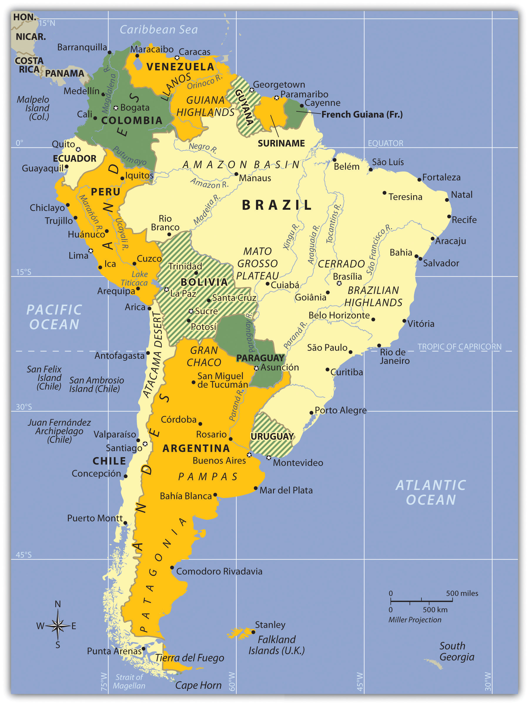The main two physical features of South America are the Andes Mountains and the Amazon River.
The continent of South America has a wide diversity of physical landscapes, from the high Andes Mountains to the tropical forests of the Amazon Basin. This assortment of physical features offers many resource bases, allowing people to engage in economic activity, gain wealth, and provide for their needs. The long range of the Andes holds mineral riches that have been being extracted since ancient times. Precious metals have been mined from the mountains to grant great opportunities for those fortunate enough to be recipients of its wealth. Fossil fuels have been found in abundance in the far northern regions of Venezuela and Colombia. The Amazon Basin has been a source of hardwood lumber and, more recently, extensive mineral wealth. Some of the largest iron-ore mines in the world are located here. The massive plains of Brazil and the rich soils of the Pampas allow for enormous agricultural operations that provide food products for the continent and for the world. Even the inhospitable Atacama region in northern Chile holds some of the world’s largest copper reserves. In addition, the wide variety of climate zones allows a diverse range of species to develop. The extremes in physical geography in South America have created both barriers and opportunities to those who live there.
Before the era of European colonialism, many local groups organized themselves into states or empires. The Inca Empire was the largest in existence at the time the Europeans arrived. The early empires developed massive structures that required huge cut stones weighing many tons to be moved into place without the benefit of modern tools or technology. European colonialism altered the continent in several ways. Not only did the Europeans defeat and conquer indigenous Amerindian groups such as the Inca, but cultural exchanges also took place that altered the way of life for countless South Americans. Colonialism created many of the current country borders and influenced trade relationships with the newly created colonies. The plantation system and the introduction of slaves from Africa drastically changed the ethnic makeup of the people living along the eastern coast. After slavery was abolished, indentured servitude brought workers from Asia to support the labor base.
Indentured servants were usually poor individuals who agreed to work for an agreed upon period of time, usually less than seven years, in return for the necessities of life such as lodging, food, and transportation or clothing. These individuals did not usually receive a salary but may have received a lump sum payment upon completion of the agreed upon service. Under favorable conditions indentured servants were treated like relatives and gained important experience and job skills to provide for their future. Many situations were much less favorable and resembled a form of slavery where individuals did not survive their servitude but succumbed to disease, harsh conditions, or death.
The physical environment and the influence of colonialism were both responsible for the cultural attributes of the regions of South America. The continent can be divided into regions by ethnic majorities influenced by early colonial development. The mixing of ethnic groups from Europe, Africa, and Asia with each other or with the indigenous population has created a diverse cultural mosaic. For example, most people in Guyana and Suriname are from Asia, most people in Argentina and Uruguay are from Europe, most people in Peru and Bolivia are Amerindian, and most people in many areas along the eastern coast of Brazil are of African descent. A large percentage of the population of South America is of a mixed ethnic background. Understanding the cultural geography of South American supports comprehension of the realm’s human development patterns.
South America’s modern economic development has helped integrated it with the global economy. The levels of economic development vary widely within the realm. There are clear indications of core-peripheral spatial patterns within various regions of the continent, and rural-to-urban shift has been strong in many areas. The rural regions in the Andes or the interior suffer from a lack of economic support needed to modernize their infrastructure. At the same time, metropolitan areas are expanding rapidly and are totally integrated with global markets and the latest technologies. Most of the large cities are located along the coastal regions. This pattern of urbanization is mainly a result of colonial activity and influence. The countries of South America are working among themselves to network trade and commerce activities. Trade agreements and economic unions have become standard methods of securing business partnerships to enhance the realm’s economic opportunities.
The far-reaching Andes Mountains and the massive Amazon River system dominate South America’s physical geography. The five-thousand-mile-long Andes Mountain chain extends along the entire western region of the continent from Venezuela to southern Chile. The Andes are the longest mountain chain on Earth and the highest in the Americas. The Andes Mountain range has more than thirty peaks that reach at least twenty thousand feet in elevation, many of which are active volcanoes. The Andes has provided isolation to the Inca Empire, mineral wealth to those with the means for extraction, and a barrier to travelers crossing the continent. The Andes’ minerals include gold, silver, tin, and other precious metals. Mining became a major industry in the colonial era and continues to the present.
At the core of the continent is the mighty Amazon River, which is more than two thousand miles long and has an enormous drainage basin in the largest tropical rain forest in the world. The Amazon’s many tributaries are larger than many other world rivers. Flowing parallel to the equator, the Amazon is in contention with the Nile as the longest river in the world. In 2007, a dispute arose over the actual length of the Amazon River. Brazilian scientists using satellite imagery and teams on the ground using a global positioning system (GPS) calculated a new length for the Amazon. Using similar methods, the Nile River also had a new length calculated. Both were determined to be longer than originally measured. At this time, the actual length of each river is openly disputed. The most accurate statement is that the Amazon River has the greatest discharge of any river in the world, and it is potentially also the longest river in the world.
The Amazon carries about a fifth of all river water in the world. The Amazon and its many tributaries drain the entire interior region of the continent, covering 40 percent of South America. During the rainy season, the Amazon River can be more than one hundred miles wide. No bridges span the Amazon River. Its source is a glacial stream located high in the Peruvian Andes, about 150 miles from the Pacific Ocean.
The Amazon’s extended tributaries—such as the Rio Negro, the Madeira, and the Xingu—move massive amounts of water through the Amazon Basin and are major rivers in their own right. The Amazon has more than 1,100 tributaries; a dozen are more than one thousand miles long. Hydroelectric dams are located on the tributaries to produce electricity for the region’s fast-growing development. South America has additional large rivers that drain the continent, including the Orinoco, which flows through Venezuela; the Sao Francisco, which flows through southeast Brazil; and the Paraguay and the Paraná Rivers, which flow south from Brazil into the Rio de la Plata between Argentina and Uruguay.
Lake Titicaca rests in the middle of the Altiplano Region of the Central Andes on the border between Peru and Bolivia. The Altiplano Region is a wide basin between two main Andean mountain ranges. The word altiplanoSpanish term for “valley.” The Altiplano in South America is the region located around Lake Titicaca between two ranges of the Andes. means “valley” in Spanish. There are a substantial number of altiplanos in South America. They provide for agricultural production and human habitation. The Altiplano Region has been home to ancient civilizations that date back to early human settlements. Lake Titicaca is a large freshwater lake about 120 miles long and 50 miles wide. The surface is at an elevation of about twelve thousand feet above sea level, and the lake is more than nine hundred feet deep in some areas. Usually at such high elevations, the temperature would dip below freezing and restrict agriculture. However, the large lake acts as a solar energy collector by absorbing energy from the sun during the day and giving off that energy in the form of heat during the night. The energy redistribution allows for a moderate temperature around the lake that is conducive to growing food crops. With abundant fresh water and the ability to grow food and catch fish, the Altiplano Region has supported human habitation for thousands of years. On the Bolivian side of the lake is the ancient stone site of Tiahuanaco, which has had some artifacts dated to 1500 BCE or earlier. People continue to live around and on Lake Titicaca and maintain a subsistence lifestyle.
Figure 6.2 Lake Titicaca with Traditional Reed Boat Made by Amerindian Locals
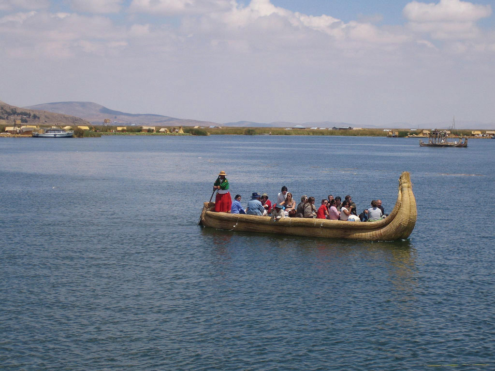Lake Titicaca is the highest-elevation navigable lake in the world.
Source: Photo courtesy of Benedict Adam, http://www.flickr.com/photos/backpackerben/2791685045.
Across the Andes Mountains from the Altiplano Region is the Atacama Desert. The Atacama is one of the driest places on Earth: in some parts, no rain has fallen in recorded history. In normal circumstances, the Atacama would be a desolate region without human activity, but that is not the case. Some of the world’s largest copper reserves are found here. Nitrates, which are used in fertilizers, are also found in large quantities. Mining the Atacama has brought enormous wealth to people fortunate enough to be on the receiving end of the profits. The rain shadow effect is responsible for the extraordinary dryness of the Atacama. The Andes are quite high at this latitude, and the winds blow in rain clouds from the east. When the clouds reach the mountains, they ascend in elevation, releasing their precipitation without ever reaching the western side of the Andes.
South America has large agricultural plateaus east of the Andes, such as the Mato Grosso Plateau, which includes a portion of the great cerrado agricultural region of central Brazil. The Cerrado is a vast plain that has been developed for agriculture and produces enormous harvests of soybeans and grain crops. Bordering the Cerrado to the southeast are the Brazilian Highlands, an extensive coffee-growing region. The Pampas in eastern Argentina, Uruguay, and southernmost Brazil is another excellent agricultural region with good soils and adequate rainfall. Farming, cattle ranching, and even vineyards can be found here, making the Pampas the breadbasket of the Southern Cone. To the south of the Pampas is the lengthy expanse of Patagonia, which covers the southern portion of Argentina east of the Andes. Patagonia is a prairie grassland region that does not receive a very much rainfall because of the rain shadow effect of the Andes to the west. The main activities in Patagonia are the raising of cattle and other livestock. The region is starting to attract attention for the extraction of natural resources such as oil, natural gas, and valuable minerals.
To the northern part of the continent in Venezuela and Colombia, sandwiched between the Andes Mountains and the Guiana Highlands, is a grassland region with scrub forests called the LlanosTerm referring to a treeless grassland region or plateau. Most noted for the region between the Andes and the Guiana Highlands along the Orinoco River basin of northern South America.. The human population is small because of the remoteness of the region along the Orinoco River basin. The Guiana Highlands of southeast Venezuela and the Guianas are an isolated set of mountainous plateaus mixed with rugged landscapes and tropical climates. Angel Falls, the highest waterfall in the world, with a free fall of more than 2,647 feet and a total drop of about 3,212 feet (more than half a mile), is located here. To the northwest of the Llanos and the Guiana Highlands in Venezuela is Lake Maracaibo, a large inland lake open to the Caribbean Sea. A coastal lake, Maracaibo rests atop vast oil reserves that provide economic wealth for Venezuela.
South America’s colonial legacy shaped its early cultural landscape. The indigenous people, with their empires and local groups, were no match for the Iberian invaders who brought European colonialism to the continent. South America was colonized exclusively by two main Iberian powers: Spain colonized the western part of the South America, and Portugal colonized the east coast of what is present-day Brazil. The only region that was not colonized by those two powers was the small region of the Guianas, which was colonized by Great Britain, the Netherlands, and France.
Figure 6.3 Colonial Activity in South America
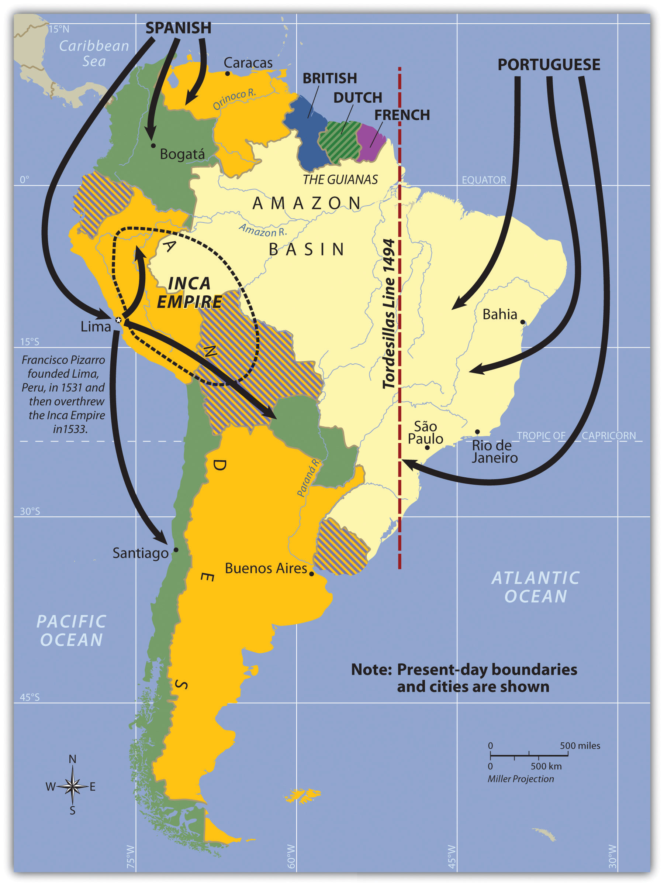Everything changed with the invasion of the Iberian colonizers. The underlying tenets of culture, religion, and economics of the local indigenous people were disrupted and forced to change. It is no mystery why the two dominant languages of South America are Spanish and Portuguese and why Roman Catholicism is the realm’s dominant religion. Colonialism also was responsible for transporting food crops such as the potato, which originated in the Peruvian Andes, to the European dinner table. Today, coffee is a main export of Colombia, Brazil, and other countries in the tropics. Coffee was not native to South America but originated in Ethiopia and was transferred by colonial activity. The same is true of sugarcane, bananas, and citrus fruits; oranges were not native to South America, but today Brazil is the number one exporter of orange juice. Colonialism was driven by the desire for profit from the quick sale of products such as gold or silver, and there was a ready market for goods not found in Europe, such as tobacco, corn, exotic animals, and tropical woods.
Plantation agriculture introduced by the Europeans led to a high demand for manual laborers. When the local populations could not meet the labor demand, millions of African workers were brought through the slave trade. These African slaves introduced their own unique customs and traditions, altering the culture and demographics of the Western Hemisphere. The current indigenous Amerindian population, a fraction of what it was before the Europeans arrived, makes up only a small percentage of South America’s total population. Europeans colonizers generally took the best land and controlled the economic trade of the region. The acculturation in South America is directly related to the European colonial experience.
Not long after Hernán Cortés conquered the Aztec Empire of Mexico in 1521, a young Spanish conquistador named Francisco Pizarro, stationed in what is now Panama, heard rumors of silver and gold found among the South American people. He led several sailing excursions along the west coast of South America. In 1531 CE, he founded the port city of Lima, Peru. Since 1200 CE, the Inca had ruled a large empire extending out from central Peru, which included the high-elevation Altiplano Region around Lake Titicaca. The Inca Empire dominated an area from Ecuador to Northern Chile. The Inca were not the most populous people but were a ruling class who controlled other subjugated groups. Pizarro, with fewer than two hundred men and two dozen horses, met up with the Inca armies and managed to defeat them in a series of military maneuvers. The Inca leader was captured by the Spanish in 1533. Two years later, in 1535, the Inca Empire collapsed.
Figure 6.4 Colonialism in South America
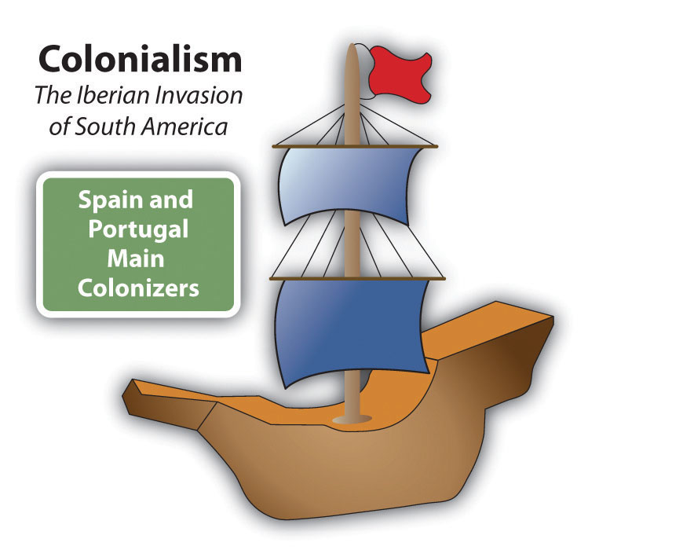The two main colonizers in South America were Spain and Portugal. The Spanish conquistador Francisco Pizarro defeated the Inca Empire.
The Inca Empire was significant thanks to the high volume of gold and silver found in that region of the Andes. The story is told that Pizarro placed the captured Inca leader in a small room and told him that if the room was filled with gold to the top of the Inca leader’s head, Pizarro would let the Inca leader go free. Gold was summoned from the people and the countryside, and the room was filled. The conquistadors forced the Inca leader to convert to Catholicism and be baptized and then killed him. The gold was melted down and transported back to Spain. The mineral wealth of the Andes made the conquistadors rich. Lima was once one of the wealthiest cities in the world. Europeans continued to dominate and exploit the mining of minerals in Peru and Bolivia throughout the colonial era. European elites or a Mestizo ruling class has dominated or controlled the local Amerindian groups in the Andes since colonial times.
Figure 6.5 The Jesuit Church of La Compañia de Jesús on the Plaza de Armas in Cuzco, Peru
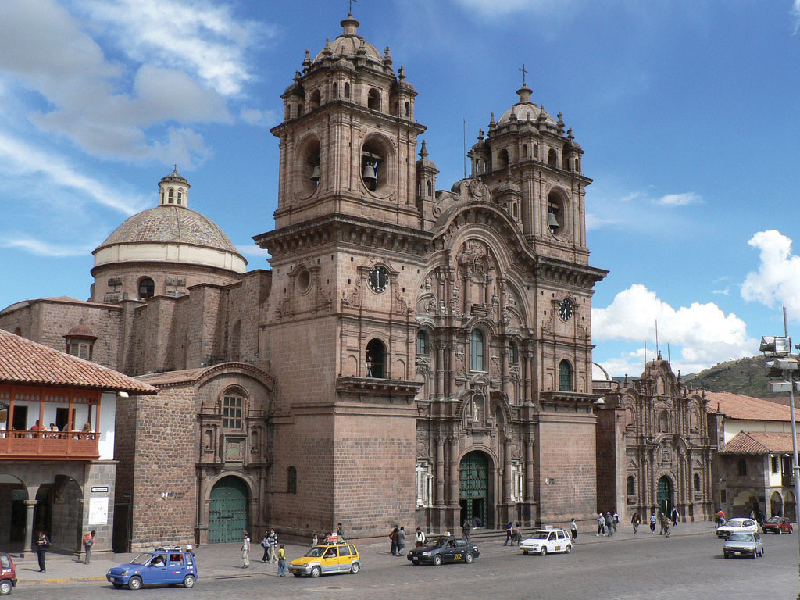The original church was constructed in 1571 on the site of the ancient Incan palace. The earthquake of 1650 caused severe damage to the building, so it had to be reconstructed in about 1688. Many Catholic cathedrals in Latin America were built with stones from ancient sites. This cathedral is claimed to be the Western Hemisphere’s most ideal example of colonial baroque architecture.
Source: Photo courtesy of James Preston, http://www.flickr.com/photos/jamespreston/1125218299.
Many Amerindian groups inhabited this region before the Inca Empire, such as the people who built and lived in the ancient city of Tiahuanaco, which could have bordered Lake Titicaca during an earlier climate period, when the lake was much larger. Clearly, humans have lived in South America for thousands of years. There is speculation that travel between South America and the Mediterranean region occurred earlier than current historic records indicate. Many of the ruins in the western region of South America have not been thoroughly excavated or examined by archaeologists, and the size and scope of many of the stone structures stand as testimony to the advancements in engineering and technology employed in an era that, according to historical records, had only primitive tools.
The Spanish conquistadors were not the only European invaders to colonize South America. Colonial influence—which forced a change in languages, religion, and economics—also came from the small European kingdom of Portugal. Portuguese ships sailed along the eastern coast of South America and laid claim to the region for the king. The Portuguese did not find large gold or silver reserves, but they coveted the land for the expansion of their empire. Soon the Spanish and the Portuguese were fighting over the same parts of South America. In 1494, the issue was brought before the Roman Catholic Church. The Tordesillas Line was drawn on a map to divide South America into the Spanish west and the Portuguese east. The region that is now Brazil became the largest Portuguese colonial possession in South America, a center for plantation agriculture similar to that in the Caribbean. For this reason, a large African population lives in Brazil, and most of the people in Brazil speak Portuguese and are Roman Catholics.
Independence did not come for the Spanish colonies until 1816 and 1818, when Chile and Argentina broke away in an independence movement in the south. Simón Bolívar led liberation movements in the north. By 1824, the Spanish were defeated in South America. Brazil did not gain independence from Portugal until 1822, when the prince of Portugal declared an independent Brazil and made himself Brazil’s first emperor. It was not until 1889 that a true republic was declared and empire was abolished.
The Guianas in the northeast were the only European colonies in South America that were not under Spanish or Portuguese control. The British, Dutch, and French all held claims to different parts of the Guianas. French Guiana remains a colony (department) of France to this day. The transition from colony to independent state has required persistence, time, and patience. Guyana and Suriname only just received their independence in the latter part of the twentieth century.
Figure 6.6 The Guianas of South America
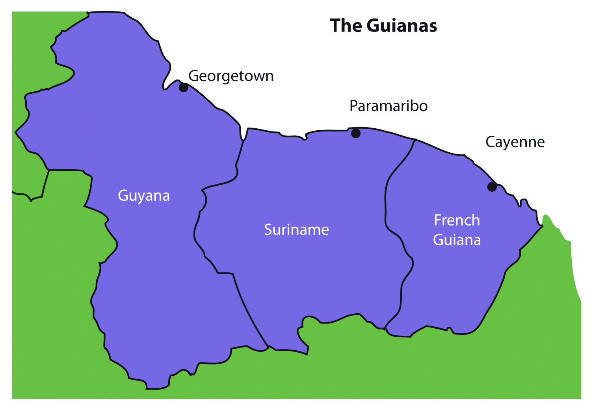The coastal location of the Guianas provided European colonialists with an excellent site for plantation agriculture. Coastal cities had easy access to the Atlantic trade system. The active slave trade in the Atlantic brought African slaves to the Guianas to work the plantations. When slavery was abolished, indentured servants were brought in from other parts of the world that were colonized by the same European powers. Colonialism and plantation agriculture entirely changed the cultural dynamics of the Guianas. Port cities along the coast are the dominant urban centers. The Guianas follow a pattern similar to that of the rimland of the Caribbean and are included with the Caribbean in many studies. At the present time, bauxite (aluminum ore) mining and oil deposits along the coast provide modest income, and many people make their living in subsistence agriculture.
Guyana and its neighbors have a tropical type A climate. The main interior regions are covered with dense forests. Some deforestation has taken place in Guyana; even so, forests cover more than 80 percent of Guyana’s land area with a diverse range of forests, ranging from dry evergreen forests to tropical rain forests, and with thousands of species of plants that are only found in this region. Guyana’s natural habitats and biodiversity are unparalleled, which is attributable to the climate, distinctive landforms, and largely well-preserved ecosystems. Its large rain forests play host to a myriad of species not found elsewhere. The interior regions remain more than 70 percent pristine, but this will change if logging, mining, and deforestation are not managed appropriately.
Guyana was called British Guiana before it became independent in 1966. The region was home to Carib and Arawak groups before the arrival of the Dutch, who established the first colony there in 1616. By 1831, the British had taken control and declared the colony British Guiana. African slaves were the main source of plantation labor until slavery was abolished in 1834. At that point, indentured servants from many countries were targeted for labor; most were East Indians from South Asia. There were also thousands of servants from China and other countries.
The ethnic background of Guyana’s population, which is less than one million, is a mix of African (36 percent), East Indian (50 percent), and Amerindian (7 percent). The remainder are mixed and European. The religious background of the East Indians includes both Hindus and Muslims. About 50 percent of the population has converted to Christianity. Ethnic divisions create difficulties in organizing politics and social activities. For example, one political concern is that minority groups with greater economic advantages will dominate the political arena without regard to the wishes of other ethnic groups.
Most of Guyana’s people live in the coastal regions. The almost impenetrable interior has large uninhabited areas with dense tropical forests. To protect its unique biodiversity, large areas have been placed in conservation areas and national parks. More than one million acres have been placed in the Konashen Community-Owned Conservation Area (COCA) to help preserve the natural environment and provide a sustainable economic relationship with local Waiwai people. In a similar effort, the government created the Kaieteur National Park, which features the spectacular Kaieteur Falls, which is about five times higher than Niagara Falls in North America. For its size, the falls has an enormous amount of water volume flowing over its crest. Other areas of the Guyana are also being considered for preservation.
Figure 6.7 Kaieteur Falls, Guyana
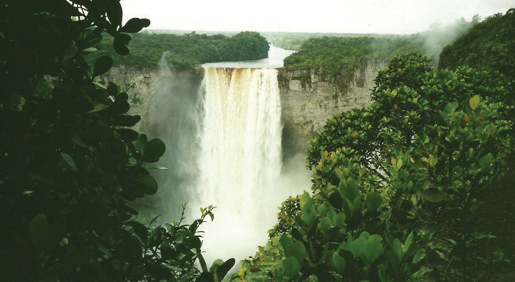Kaieteur Falls has the largest single-drop waterfall by volume in the world. A national park has been created in this area to include the falls.
Source: Photo courtesy of Paul Arps, http://www.flickr.com/photos/slapers/5354124503.
Guyana’s economy is based on agricultural activities and the export of extracted natural resources. Sugarcane is a main cash crop, and timber sales are increasing. Fishing is common in the coastal areas. Bauxite mining has been the main mining activity, and mining of gold and other minerals has only advanced in recent years. Guyana’s economy is similar to that of many islands of the Caribbean, a relationship exemplified by its membership in CARICOM (the Caribbean Community). CARICOM’s headquarters is located in Georgetown, the capital of Guyana.
Suriname’s colonial name was Dutch Guiana. The name was changed when independence was granted in 1975. The cultural background of the colony is as diverse as its history. Dutch Guiana was divided between British and Dutch colonists. Slavery and plantation agriculture were introduced in the colonial period, and the harsh conditions of slavery caused many slaves to escape the plantations and live in the forests. These runaway slaves, called Maroons, eventually organized into viable independent groups. Peace treaties were finally made with the Maroons to grant them legitimate rights. After slavery was abolished, indentured servants from South Asia and the Dutch East Indies (Indonesia) were conscripted into the colony’s labor base.
Most of the half-million people who live in Suriname today reside along the coast. The ethnic background of the people includes East Indian (37 percent), Creole (31 percent), Indonesian (15 percent), African (10 percent), Amerindian (2 percent), Chinese (2 percent), and European (about 1 percent). All three of the Guianas are ethnically diverse, and in this setting, the diversity creates tensions related to social and economic stability. Guyana and Suriname are the least Latin regions of South America; the Creoles, for example, are mainly a mix of African and Dutch mixed with Asian or Amerindian. Establishing a stable government and conducting civil affairs are often complicated by the ethnic groups that vie for power and political control. The religious background in Suriname includes Hindu, Muslim, Christian, and a mix of African religions such as Winti.
Figure 6.8 Ethnic Groups of Suriname by Percentage of the Population
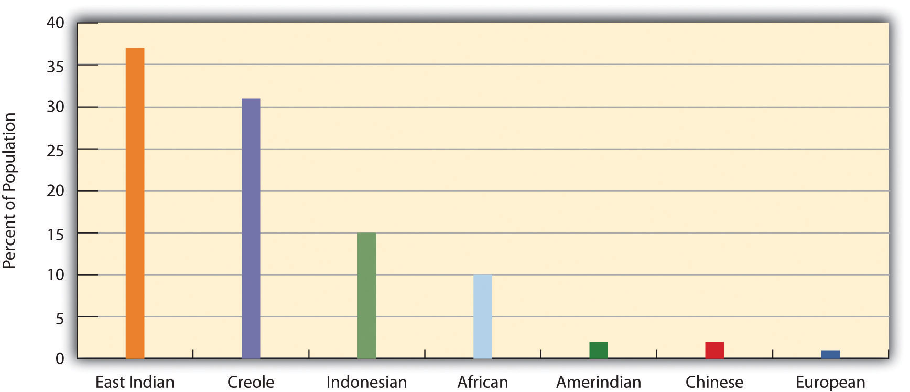Source: Data courtesy of CIA World Factbook 2010, https://www.cia.gov/library/publications/the-world-factbook/geos/ns.html.
Suriname depends on agriculture and natural resources as its two main economic activities. Suriname has the smallest physical area of all the independent South American states, and it has a limited ability to provide opportunities and advantages for its growing population. Bauxite is the country’s main export product. In 1941, during World War II, the United States occupied the country to secure the valuable bauxite mines that were critical to the war effort. Suriname has also been expanding its gold mining, oil extraction, logging, and fishing industries. To protect its natural environment and its extensive biodiversity, the country has established national parks and created the large Central Suriname Nature Reserve, which UNESCO has named a World Heritage Site. Suriname hopes to benefit from these measures to create an ecotourism market.
Both Guyana and Suriname have had border disputes with their neighbors. Guyana has been locked in a challenge with Venezuela over its western region, which Venezuela claimed during the colonial era. A 1905 treaty ruled in Guyana’s favor, but a small portion is still under dispute. The corner of Surname that borders Brazil and Guyana has been an issue of contention fueled by the potential for mining of gold and other minerals in the area. The maritime boundary between Suriname and Guyana is also a point of contention. Suriname’s border with French Guiana has a disputed area along the southern corner next to Brazil. These disputes emerged out of colonial agreements and poorly defined treaty boundaries.
French Guiana is still a colony (department) of France. With fewer than 250,000 people in an area slightly smaller than Kentucky, this is a sparsely inhabited area. Half the population lives in the capital city of Cayenne. Most of the population is Creole, mainly a combination of African and French with various Asian groups mixed in. The people work in subsistence agriculture or for the French government. A noted feature of the colony’s heritage is the former off-shore prison on Devil’s Island, which France used to secure its most undesirable prisoners. More than fifty thousand French prisoners were delivered to the Devil’s Island facility during the colonial era, but less than 10 percent survived. The prison was closed in 1951.
Figure 6.9 The Ariane 42P Carrying the TOPEX/Poseidon Spacecraft
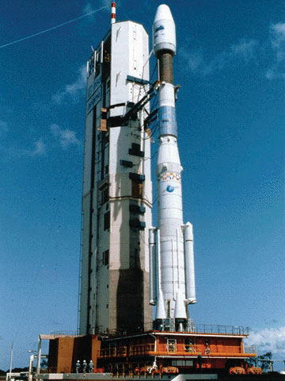This Ariane 42P was launched from the European Space Agency’s Guiana Space Center in Kourou, French Guiana, on August 10, 1992.
Source: Photo courtesy of NASA, http://sealevel.jpl.nasa.gov/gallery/topexposeidon/general/?ImageID=104.
The European Space Agency maintains a launch center in French Guiana because of its favorable climate and launch conditions. France maintains the facility and has highly subsidized the department’s economy. This European support provides the population with a higher standard of living than in many other South American countries. Economic activities have included fishing, agriculture (bananas and sugar), and logging. Deforestation from the sale of hardwood lumber has become a problem throughout the Guianas as it leaves the soil open for erosion. Logging endangers the area’s fragile but extensive biodiversity. Roads, dams, and gold mining have also contributed to the erosive destruction of the environment.
It is impossible to understand the current conditions in South America without first understanding what occurred to create those conditions. This is why studying European colonialism is so important. Colonialism changed the ethnicity, religion, language, and economic activities of the people in South America. The past five hundred years have tempered, stretched, and molded the current states and regions of the South American continent. To identify standards of living, ethnic majorities, and economic conditions, it is helpful to map out South America’s various cultural regions.
In South America, five main cultural regions indicate the majority ethnic groups and the main economic activities:
Figure 6.10 Cultural Spheres of South America.
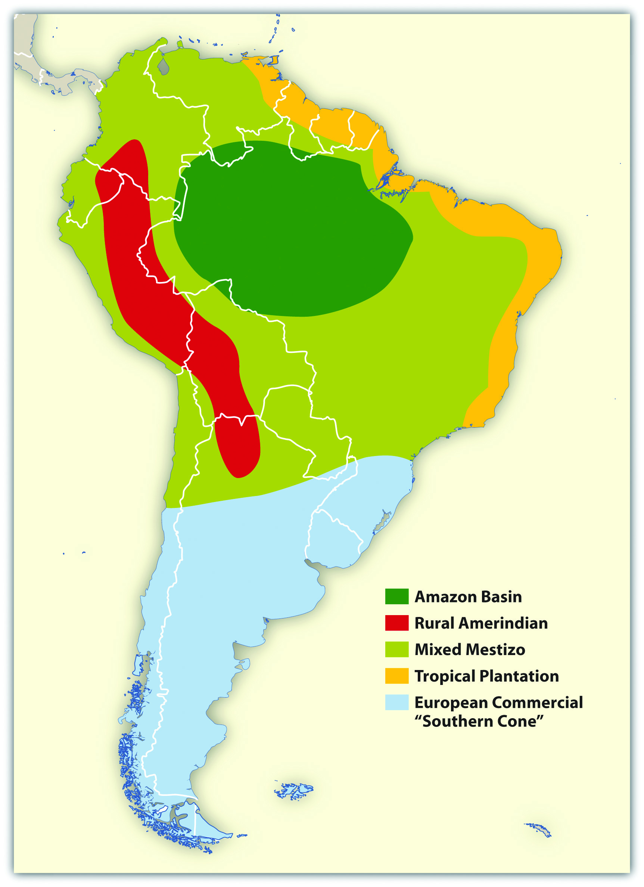These are generalized regions that provide a basic understanding of the whole continent. Technological advancements and globalization have increased the integration of the continent to the point that these regions are not as delineated as they once were, but they still provide a context in which to comprehend the ethnic and cultural differences that exist within the realm.
Figure 6.11 Young Women in Salvador, Brazil
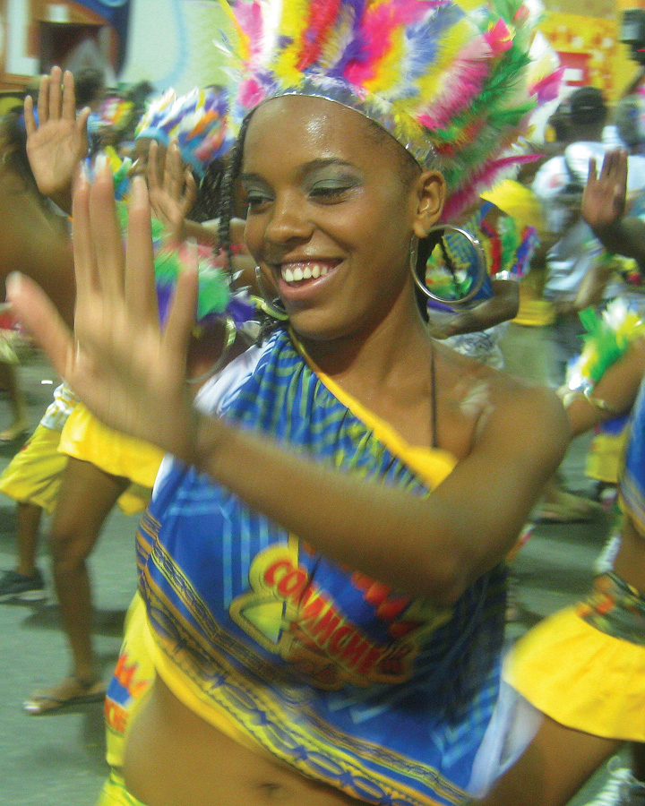Salvador, Brazil, is located along the coastal region of South America where the Tropical Plantation Region was prominent. Most people in this region are of African descent.
Source: Photo courtesy of the team at Carnaval.com Studios, http://www.flickr.com/photos/aforum/4398649958.
Located along the north and east coast of South America, the Tropical Plantation Region resembles the Caribbean rimland in its culture and economic activity. The region, which extends as far south as the Tropic of Capricorn, has a tropical climate and an agricultural economy. Europeans opened up this area for plantation agriculture because of coastal access for ships and trade. The local people were forced into slavery, but when the local people died off or escaped, millions of African slaves were brought in to replace them. After slavery was abolished, indentured servants from Asia were brought to the Guianas to work the plantations. The Tropical Plantation Region has a high percentage of people of African or Asian descent.
Figure 6.12 Amerindians
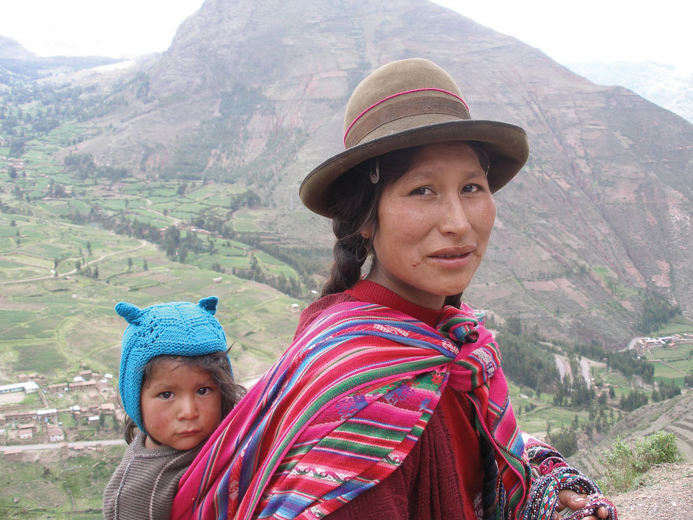The Amerindian woman and child in this photo live in the Sacred Valley of the Andes in Peru.
Source: Photo courtesy of Thomas Quine, http://www.flickr.com/photos/91994044@N00/93022902.
The Rural Amerindian Region includes the countries of Ecuador, Peru, and Bolivia. The ruling Mestizo class that inherited control from the European conquistadors mainly lives in urban areas. Most of the rural Amerindian population lives in mountainous areas with type H climates and ekes out a hard living in subsistence agriculture. This is one of the poorest regions of South America, and land and politics are controlled by powerful elites. The extraction of gold and silver has not benefited the local Amerindian majority, which holds to local customs and speaks local languages.
The Amazon Basin, which is characterized by a type A climate, is the least-densely populated region of South America and is home to isolated Amerindian groups. Development has encroached upon the region in the forms of deforestation, mining, and cattle ranching. Large deposits of iron ore, along with gold and other minerals, have been found in the Amazon Basin. Preservation of the tropical rain forest of this remote region has been hampered by the destructive pattern of development that has pushed into the region. The future of the basin is unclear because of development patterns that are expected to continue as Brazil seeks to exploit its interior peripheral region. Conflicts over land claims and the autonomy of Amerindian groups are on the rise.
Figure 6.13 Amazon River Drainage Basin
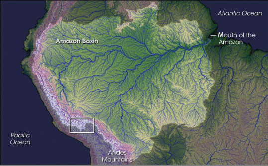The Amazon has more than 1,100 tributaries.
Source: Image courtesy of NASA, http://earthobservatory.nasa.gov/IOTD/view.php?id=7823.
The Mixed Mestizo Region includes the coastal area of the west and the interior highlands of the north and east. This region between the Tropical Plantation Region and the Rural Amerindian Region includes a majority of people who share a mixed European and Amerindian ethnicity. It is not as poor as the Rural Amerindian Region and yet not as wealthy as the European-dominated region to the south. Paraguay falls into the Mixed Mestizo Region, as do other portions of other South American countries such as parts of Brazil, Colombia, and Venezuela. Paraguay is mainly Mestizo, but its economic qualities resemble that of the Rural Amerindian Region to the north, even though Paraguay is not located in the mountains.
The southern part of South America, called the European Commercial Region or the Southern Cone, includes Chile, Argentina, Uruguay, and parts of Brazil. European ethnic groups dominate this region and include not only Spanish and Portuguese but also German, Austrian, Italian, and other European ethnic heritages. Fertile soils and European trade provided early economic growth, and the region attracted industry and manufacturing in the later decades of the twentieth century. There are not many Amerindians or people of African descent here. More than 90 percent of all the people in Argentina, Chile, and Uruguay are of European descent and live in urban areas. With a highly urbanized population and with trade connections to a globalized economy, it is no surprise that the Southern Cone is home to South America’s most developed economies.
South America has been fragmented by European colonialism, which established colonies and economic dependence on its European masters. The colonial economic patterns did not encourage the South American countries to work together to create an integrated continental trade network. Countries outside the continent have promoted trade partnerships to benefit from South America’s natural resources and agricultural exports. The establishment of the European Union and the North American Free Trade Agreement (NAFTA) created globalized trading blocs that challenged the South American countries to consider how to take advantage of trading opportunities within their realm to protect and support their own economic interests.
Since the 1990s, cooperation and business ventures have started to form within the realm to create a more integrated network of trade and commerce to benefit the countries of South America. Transportation and communication systems are being developed through joint ventures by internal investment groups. River and road systems continue to be managed and developed for improved transport of people and goods throughout the continent. Free-trade agreements have been implemented to support the integration of internal economic networks and competition in the global marketplace.
In 2008, the South American countries formed the Union of South American Nations (UNASUR) to oversee the customs unions and trade agreements within the realm. One of the more established trade associations is Mercosur (the Southern Cone Common Market), created in 1995 by the southern countries. It has evolved to include most countries in South America and is the most dominant trade agreement in the realm. Full members of Mercosur include Argentina, Uruguay, Paraguay, and Brazil. Chile, Bolivia, Peru, Ecuador, and Colombia are associate members. As of 2011, Venezuela’s membership was under review. The Andean Community (Colombia, Ecuador, Peru, and Bolivia) was established in 1969 but did not gain ground until 1995, when it established stronger trade measures. Multinational corporations have supported the creation of a Free Trade Area of the Americas (FTAA) to include all of the Western Hemisphere in one unified trade association. It has not been approved and has received strong opposition from Mercosur and economic forces that support a more localized economy controlled by local people.
South America faced division and competition during the colonial era between the Spanish and the Portuguese. Today’s new era of corporate colonialism has created similar fragmentation and divisions. The level of trade between the countries of South America and the United States and Europe varies widely. Countries such as Colombia and Chile have well-established trade relationships with the United States and are unwilling to jeopardize those trade connections to strengthen ties with their neighbors that have less-supportive political relationships with the United States. External global trade arrangements often provide financial benefits to individual countries that might not be shared by the bordering countries in the same region. South America’s historical fragmentation has not made it easy to unify the continent under a singular trade agreement to complete against the European Union or NAFTA.
Identify the following key places on a map:
Bordering the Caribbean is the large urban country of Venezuela. The Andes Mountains reach into the northern part of the country and make up the terrain of the northern coastal region all the way to the capital city of Caracas. The large grassland plains of the Llanos extend farther south from the Colombian border to the Orinoco River delta. The Llanos is a large, sparsely populated region that makes up about one-third of the country. It is remote, susceptible to flooding, and used mainly for raising cattle. In the southeast of Venezuela are the Guiana Highlands, which make for a spectacular physical landscape of tropical forests and rugged mountainous terrain. The highlands include Angel Falls, the tallest waterfall in the world. Angel Falls drops 2,647 feet and is Venezuela’s most popular tourist attraction. Lake Maracaibo, a large inland sea located in the western region of the country, is not a true lake in that it is open to the Caribbean Sea, but it is considered the largest inland body of water in South America. Lake Titicaca, located in the Andean region of the Altiplano on the border between Peru and Bolivia, is considered the continent’s largest freshwater lake.
Figure 6.14 Northern South America and Venezuela

Notice that most of the main cities are located along the northern coast.
Source: Map courtesy of the CIA World Factbook, https://www.cia.gov/library/publications/the-world-factbook/geos/ve.html.
Figure 6.15 Angel Falls, Venezuela

The total falls is estimated at 3,212 feet; the largest free fall is estimated to be about 2,647 feet—about half a mile. Angel Falls is the country’s number one tourist attraction.
Source: Photo courtesy of Inti, http://www.flickr.com/photos/inti/3102779830.
Venezuela has an assortment of physical regions, but most of the population lives along the northern coast. About 90 percent live in urban areas, and the capital Caracas has the highest population. Less than 5 percent of the population lives south of the Orinoco River, and Amerindian groups live in the interior and along the river.
Included in the Mixed Mestizo Cultural Region, Venezuela has a heavy Spanish influence laid over an Amerindian base in a plantation region known for its African infusion. There is also a strong Caribbean cultural flavor, which is evident in the region’s music and lifestyle. The official language is Spanish, but more than thirty indigenous languages are still spoken in the country.
Venezuela gained its independence from Spain in 1821 and has developed into an urban country with an economy based on oil production. A large extent of the interior is undeveloped. Venezuela does not have extensively developed agricultural production, so most food goods are imported. Lake Maracaibo has vast oil reserves beneath it that have provided substantial wealth to the country.
As much as 90 percent of Venezuela’s export earnings are from the export of oil. Venezuela’s national oil company, CITGO, has made extensive inroads into the US gas station market. The country was one of the founding members of OPEC (Organization of Petroleum Exporting Countries), which is usually associated with the oil-rich states of the Persian Gulf. In the past decade, Venezuela has been one of the top five countries exporting oil to the United States. The other four are Canada, Mexico, Saudi Arabia, and Nigeria.
As is the case with many countries, national wealth in Venezuela does not filter down to most of the population. The wealthy elite who have benefited the most from the nation’s wealth often find themselves on the opposite side of the political debate from the majority, who are likely to live in poor conditions. Caracas has many upscale neighborhoods, but it also has a large number of slums on the outskirts of the city. Slums in South America go by different names, such as barriosTerm used to describe a slum in the northern parts of South America and Middle America. in Venezuela or favelasTerm used to describe a slum in parts of South America, particularly Brazil. in Brazil. Many of Venezuela’s barrios are built on the mountainsides of the Andes.
Figure 6.16 The Two Sides of Caracas, the Capital City of Venezuela

The photo on the left is of the main urban core, with upscale neighborhoods. The photo on the right is a barrio located on a steep mountainside. Barrios are usually self-constructed slum areas and are similar to favelas in Brazil.
Sources: Photo on the left courtesy of Cristóbal Alvarado Minic, http://www.flickr.com/photos/ctam/4732562277. Photo on the right courtesy of Danila Medvedev, http://www.flickr.com/photos/danila/29987096.
Exporting oil to the United States does not inherently lead to a friendly political relationship between the United States and Venezuela. There has been some political unrest within the country related to the current president, Hugo Chavez, holding continuous terms in office without term limits. President Chavez has held close ties with socialist Cuba and with the Castro regime and has made somewhat antagonistic statements about the world’s core economic countries. From time to time, his rhetoric and his positions are not geared toward enhancing the country’s political relationship with the United States. This situation has caused concern within the US political establishment with regard to the position that the United States takes toward Venezuela. Nevertheless, the United States remains Venezuela’s number one trading partner in both imports and exports.
Politics in Venezuela often plays the wealthy elites against the poorer majority, and President Chavez has not been an exception. Chavez has supported socialist political leaders from other Latin American states and has pushed a globalization agenda along the same lines. The country’s enormous oil revenues and its current political climate have increased Venezuela’s visibility in the global arena, but how this will play out over the long term is unclear. In the past, Latin America has had a greater number of elected political leaders with more progressive or socialist views. These trends continue to shape the economic trade agreements between countries. Venezuela has been working to increase sales of oil to countries in Mercosur (the Southern Cone Common Market), which is the most significant trade association in South America.
Globalization is also evident in Venezuela’s cultural and social dynamics. In many Latin American countries, soccer (European football) is the most popular sport, but Venezuela’s biggest sport is baseball because of the influence of early US activity in the country’s oil industry. Soccer is gaining attention and support, however. Orchestras and classical music performances have also gained notoriety in recent years. Concert halls from the Americas to Europe have experienced the performances of the Simón Bolívar Youth Orchestra. The Miss Venezuela pageant is a major production for the country, and Venezuela has won the top title at least five times in each of the following pageants: Miss World, Miss Universe, and Miss International.
Three ranges of the Andes Mountains run from north to south through Colombia, which is larger than the nine most southeastern US states. With a land area covering about 440,839 square miles, Colombia is more than ten times larger than the US state of Kentucky and close to twice the size of France. Colombia borders five countries, with the Caribbean to the north, the Pacific Ocean to the west, the Orinoco River to the east, and a short segment of the Amazon River to the far south. Even though agriculture has been a mainstay of the country’s economic activities, because of the influence of the mountainous terrain, about 75 percent of the population lives in urban areas.
Figure 6.17 Physical Size of Colombia: 440,839 Square Miles

Colombia was a Spanish colony during the time that Spain controlled most of western South America. Colombia became independent in 1819. The region of Panama, which was first a part of Colombia, broke away in 1903 when the United States backed Panama’s independence movement. After Colombia became independent of Spain, the conservatives (wealthy elite) and the liberals (poor workers) struggled to gain control of the government. Since 1948, the conflict, known as La Violencia, has caused more than two hundred thousand casualties. During the twentieth century the government in Colombia has not always been peaceful or stable. By the beginning of the twenty-first century the government has become more unified and the country has even witnessed an increase in tourism.
Colombia’s tropical climate and its many remote areas contributed to its development as a major coca-growing region. By the 1970s, extensive drug smuggling had developed, and powerful drug cartels became major political brokers within the country, competing against the government for control of Colombia. The largest and most organized cartels operated out of Medellin and Cali, the second- and third-largest cities in the country after the capital city of Bogotá.
The coca plant grows throughout the slopes of the Andes, from Colombia to Bolivia. Historically, locals have chewed it or brewed it into tea. Coca can alleviate elevation sickness and act as a mild stimulant. Using modern methods and strong chemicals, the coca leaves can be converted into coca paste and then into cocaine hydrochloride, a powerful narcotic. It often takes up to a ton of such chemicals as sulfuric acid, kerosene, methyl alcohol, and additional substitutes to produce a kilo of cocaine. Once the process is completed, most of the chemicals are discarded and frequently find their way into nearby rivers and streams, which are the same water supplies that local people drink, clean with, and bathe in. Birth defects have become a problem in coca-growing regions because of the high levels of chemical pollution in water supplies.
It must be noted that the short, leafy coca plant that cocaine comes from is not the same as the cacao tree that produces the beans that chocolate or cocoa comes from. They are two completely different plants with separate processes.
The United States is the largest cocaine market. Secret airfields and private boats transport the cocaine from Colombia to distribution centers in Mexico, Central America, or the Caribbean. From there, the drugs are smuggled into the United States. Colombian drugs are a multibillion-dollar industry that makes up a large portion of the Colombian economy. The effect of the drug industry on the people of Colombia is extensive—from the gunfire on the streets to the corruption of government officials. In recent years, the same drug cartels that have operated the cocaine industry have imported opium poppies, which grow well on the higher and more arid slopes of the Andes. Opium poppies are native to Asia but have been transported to South America. Opium is extracted from the seedpod and can be further refined into heroin. Colombian drug cartels, with a Mexican distribution network, have muscled into as much as 20 percent of the US heroin market. The US government has supported the Colombian government in the fight against the drug cartels and the trafficking of illegal drugs out of Colombia.
Colombia’s two main legal exports to the United States are coffee and oil. Coffee is only grown in the tropics, since coffee trees must be grown in a frost-free environment. Coffee trees, which originally grew in Ethiopia, have since been grown throughout the world. Coffee trees can grow in elevations from sea level to six thousand feet, but most of the best specialty coffee is grown at elevations between three thousand to six thousand feet. Colombia has ideal conditions for growing coffee and was once the world’s largest coffee producer; now Brazil and Vietnam each produce more.
Early coffee production in Colombia was initially promoted by Catholic priests who were influential in supporting local parishioners to grow the crop. The industry was greatly enhanced in 1927 with the formation of the National Federation of Coffee Growers of Colombia. Coffee production on the mountain ranges of the Andes in Colombia supports up to a half million small farms and local growers that make up a large portion of the coffee economy. Harvesting coffee is labor intensive and can employ large numbers of workers. The seasonal nature of the harvest also leaves workers to find employment during the rest of the growing season.
In recent years, there has been growing concern about how climate change will continue to affect the region’s coffee production. In the past century, parts of Colombia experienced up to a 1 ºC average temperature increase and up to a 25 percent increase in precipitation. These climate changes have negatively affected coffee output and reduced coffee production as much as 25 percent in some areas. New agricultural methods are being developed in an attempt to counter these effects.
Oil has now become Colombia’s number one legal export. Oil is found in fields in the northern and central regions of Colombia. Immense quantities of coal are also found in the same regions, but oil is more valued on the export market. Pipelines connect the interior oil fields of Colombia with the northern ports. The US market size and population make it the world’s largest oil consumer. US oil companies have been investing in the development of Colombian oil for many years. Colombia has been a developing oil source even though its total extractable resources are not as vast as in other countries. For example, in 2006 the United States imported more oil from Colombia than from Kuwait, Oman, the United Arab Emirates (UAE), Bahrain, Qatar, and Yemen combined.
Figure 6.18 Insurgent Areas

Insurgent groups control regions in Colombia as large as US states.
Source: Updated from map courtesy of the CIA World Factbook.
Since the United States is the largest consumer of Colombian oil, it is easy to understand why the United States has a vested interest in the stability of the Colombian government. A sizable portion of Colombia is controlled not by the government but by drug cartels or other insurgent groups. Dozens of guerilla organizations also control portions of Colombia. Some insurgent groups support the government and are against the drug lords, while others fight the government and work independently or with the cartels. Drug sales, kidnappings, and extortion of legitimate businesses provide income to these groups. Thousands of children serve in these groups, and about a third of them are female. The most powerful insurgent group is FARC (Revolutionary Armed Forces of Colombia), which controls entire regions the size of many US states. FARC is a recognized political entity by neighboring countries but is not given the same recognition by the United States and many external countries of the region.
Figure 6.19 Colombian Exports

The three main export products of Colombia are illegal drugs, oil, and coffee. The United States is the largest consumer of all three.
Sources: Photo on the left courtesy of the DEA, http://www.justice.gov/dea/photos/cocaine/cocaine_bricks_scorpion_logo.jpg. Photo in the center by R. Berglee. Photo on the right from http://commons.wikimedia.org/wiki/File:Ja-knikker_op.jpg.
The relationship between Colombia and the United States is often conflicting. The US consumer supports the Colombian drug cartels by being the largest consumer of illegal drugs. The US government, under the Drug Enforcement Administration (DEA), has declared a war on drugs and has supported the Colombian government with billions of dollars in foreign aid to fight that war. On another front, US oil corporations have paid insurgent groups to protect their oil assets. Oil is exported to the United States, bringing billions of dollars into the Colombian economy. The chaos in Colombia is directly related to the exploitation and marketing of their resources. It is the people of Colombia that suffer in the cross fire from this civil war of corruption, crime, death, and destruction. The United States is a counterforce partner in this situation but operates from the consumer end of the resource pipeline. The largest consumer market for Colombia’s export of oil, drugs, and coffee is the United States, which is also the largest contributor of foreign aid to Colombia.
The Central Andes, which includes Ecuador, Peru, and Bolivia, were home to the Inca Empire. The empire had gone through some internal divisions and was working on unifying the region when Francisco Pizarro’s small army defeated the Incan warriors and brought about colonial rule beginning in the 1530s. Many cultures lived in the Central Andes before the Inca, and their legacy continues in the customs and the ways of the Amerindian people who still live there today. Spanish is the official language, or the lingua franca, but indigenous languages are widely spoken and dominate in the rural areas and remote villages. Ecuador, Peru, and Bolivia make up the core of the Rural Amerindian Region of South America. There have been border disputes among the three countries, and also with their neighbors. Nevertheless, they all share the Andes and have many things in common.
Figure 6.20 Machu Picchu

High in the Peruvian Andes, the Lost City of the Incas, Machu Picchu, was rediscovered in 1911 by Yale archaeologist Hiram Bingham and is one of the most beautiful and enigmatic ancient sites in the world. The ruins are located at about 7,970 feet in elevation and are surrounded by higher peaks of the Andes.
Source: Photo courtesy of funkz, http://www.flickr.com/photos/funkz/4034082685.
The physical geography of the Central Andes includes more than just the high Andes Mountains, although they dominate the landscape. The coastal region to the west of the Andes is generally warmer than the cooler climate of the mountains. The equatorial region is rather humid. The coastal region in southern Peru is dry and arid because of the ocean currents and the rain shadow effect of the Andes, which creates the Atacama Desert that extends up from northern Chile. Southwest Bolivia has some of the world’s largest salt flats in this dry and barren region. In the interior, on the eastern side of the mountain ranges, is the huge expanse of the Amazon Basin. Tropical and humid with heavy precipitation is generally the climate rule. Rain forests and jungle fauna can be found on the eastern slopes. The Altiplano region has the high-elevation Lake Titicaca. The variations in physical terrain provide extensive biodiversity in animal and plant species. It also supports a variety of economic activities to exploit the bountiful natural resources.
Even though the Altiplano region borders the Pacific Ocean, it also links directly to the Atlantic Ocean. The headwaters that create the Amazon River start in Peru, and by the time the water reaches the Peruvian city of Iquitos, the river is large enough to accommodate large shipping vessels. Iquitos is a port city for the Atlantic Ocean with access to Europe, Africa, or eastern North America. The port also links the region with Brazil’s free-trade zone in Manaus, which has access to large oceangoing shipping and an international market.
The region’s main income comes from exports of minerals, fossil fuels, and agricultural products. Oil is the number one means of gaining national wealth in Ecuador and Peru; natural gas is the number one export of Bolivia. Gold, silver, tin, and other minerals are also abundant and are being exploited as conditions allow. The Spanish opened up a large silver-mining operation in Potosí, Bolivia, which continues to be exploited with modern mining methods. Potosí, one of the earth’s highest-elevation cities at 13,420 feet above sea level, was once the largest silver mine in the world.
The city of Lima, Peru, was built on wealth from gold and silver extracted from the Inca Empire and the Andes Mountains. As is the case in many peripheral regions, the economic state of Peru, Ecuador, and Bolivia is dependent on global prices for their export products. There has been considerable conflict and political wrangling about who controls the wealth from extractive economic activities. Originally, the Spanish conquistadors took the materials and the wealth. They were replaced by Mestizo land owners and wealthy elites who struck deals with international corporations. The corporations exploited the countries’ natural resources, with little profit actually ending up in the hands of most of the people. These issues remain at the top of the political agendas in all three countries.
Figure 6.21 Quito, Ecuador

Quito, Ecuador, is an urban center high in the Andes, with a population of more than 1.5 million. This photo shows the large buildings of the central business district with the mountains in the background surrounding the city. Quito is at about 9,200 feet in elevation and is considered the second-highest-elevation capital in the world after La Paz in Bolivia.
Source: Photo courtesy of David Berkowitz, http://www.flickr.com/photos/davidberkowitz/4870874502.
Poverty and the exploitation of natural resources usually result in environmental degradation unless proper measures are taken to prevent it. The area’s heavy reliance on oil and gas extraction to gain national wealth has come at a great cost to their environment. Many oil spills have caused oil to enter the freshwater supplies of local residents and pollute the rivers and streams of the Amazon Basin. Mining has traditionally devastated the land because large portions of earth are removed to extract the ore or mineral. Pollution is causing a loss of habitats and destroying ecosystems, and few measures are being taken to prevent it. Deforestation is being caused by the timber industry and by clearing for agriculture. Overgrazing and the removal of the trees leave the soil open to erosion.
Tourism is expanding to connect travelers with opportunities to explore Incan and pre-Incan sites, which are the main attractions. One of the main tourist attractions in Peru is the ancient city of Machu Picchu in the Andes not far from Cuzco. In 2010, Peru gained over two billion dollars from the tourist activities of about two million foreign tourists.“Peru’s Inbound Tourism Revenue to Reach $2.2 Billion This Year,” Andina, http://www.andina.com.pe/ingles/Noticia.aspx?id=nfbX5vudSxw=. Ecuador’s major tourist attraction is the Galapagos Islands, which aided Charles Darwin in understanding natural selection and the evolutionary process. Bolivia has a number of ancient sites that predate the Inca and have become major tourism destinations. The ancient city of Tiahuanaco and the enigmatic Lake Titicaca are good examples.
Tourism can be a great source of economic income but it can come at a cost to the environment. There is always concern that high-traffic tourism sites like Machu Picchu can be degraded by the sheer mass of people visiting the site. The environmental imprint may be extensive. The term ecotourism has been used to indicate the activity of people traveling to experience and enjoy the natural world with an aim not to damage the environment in the process. The main objective was to make the tourism activity sustainable, which promoted stewardship of the land and respect for its attractions. Jonathan Tourtellot, director of the National Geographic Society’s Center for Sustainable Destinations, coined and prefers the term geotourismType of sustainable tourism that focuses on the stewardship of place and the preservation of its essential character., which can be translated as the stewardship of place and the preservation of its essential character.“Can Tourism Be Sustainable?,” Miller-McCune, http://www.miller-mccune.com/environment/can-tourism-be-sustainable-16362/. These concepts are becoming more integrated with the tourism industry to promote a sustainable model for high traffic sites like the Galapagos Islands with fragile ecosystems.
Economics usually drive politics. Accordingly, Peru, Ecuador, and Bolivia have endured some serious ups and downs in their political environment. Corruption, authoritarianism, and human rights violations have been common accusations toward the political leadership of the countries. To address the economic condition of his country in 2000, Ecuador’s president announced that the country would adopt the US dollar as its main medium of exchange. This may have brought some economic stability, but it did not address the problems of a high national debt and a fluctuation in commodity prices. All three countries have undergone political turmoil. Large percentages of the populations live in poverty. Bolivia is considered one of the poorest countries in South America. In 2006, Bolivia elected a socialist president from the MAS (Movement for Socialism) party who was from a minority Amerindian group rather than a member of the wealthy elite. In Peru, a number of presidents have been forced to resign, and military coups have also produced leadership changes.
Figure 6.22 Indigenous Women on Their Way Home from the MAS congress in Bolivia, January 2009

MAS is the Movement for Socialism, which has been active in Bolivian politics.
Source: Photo courtesy of Norsk Folkehjelp Norwegian People’s Aid, http://www.flickr.com/photos/folkehjelp/4776227579.
Population growth is a major factor in the future of Peru, Ecuador, and Bolivia. In 2010, Bolivia had more than ten million people, Ecuador had more than fourteen million, and Peru had about twenty-nine million. More than 30 percent of the population of Ecuador and Bolivia resides in rural areas and make a living from subsistence agriculture. All three countries have large populations in relation to the production of adequate food. Peru and Bolivia are large countries in physical area but do not have a high percentage of arable land. Rural-to-urban shift is increasing and the major cities are continuing to expand, overtaxing public works and social services.
The culture of the Central Andes is heavily influenced by its rural Amerindian heritage. The foundation of the traditional agrarian society has been subsistence agriculture. One-third of the population in Ecuador and Bolivia and up to one-fourth of the population in Peru continue to live a traditional way of life. Local cuisine reflects the connection to the land. Potatoes, maize, guinea pigs, and fish are common fare in rural areas. The cities are encountering international influences that are changing the demands in local cuisine and culture. Traditional food, arts, and local crafts still thrive in the local districts and for the tourism market.
Figure 6.23 The Andean West and Paraguay

This map also displays a part of the Amazon Basin, the Atacama Desert, Altiplano, and the Mato Grosso Plateau.
Source: Map courtesy of University of Texas Libraries, http://www.lib.utexas.edu/maps/americas/south_america_ref_2010.pdf.
This region’s location on the Pacific RimThe coastal lands bordering the Pacific Ocean. of South America has contributed to an Asian influence, which has integrated itself with the local culture. Former president of Peru Alberto Fujimori had Japanese ancestry and held dual citizenship in both Peru and Japan. Similar to Havana, Cuba, in Middle America, Lima, Peru, is also home to one of the earliest Chinatowns in the Americas, where the Chinese culture has mixed with the Latino culture to create a unique cultural blend. Bolivia is landlocked and does not have the advantage of a west-coast port city to interact with the Asian marketplace. However, its culture is still impacted by globalization and is evolving from within.
Paraguay is located in the Mixed Mestizo Cultural Region between Brazil, Argentina, and Bolivia. This landlocked country is not located in the Andes. The country’s poor economic characteristics and troublesome political dynamics are similar to those of its neighbors in the Central Andes. Like other Latin American countries, most of the population practices Catholicism. Spanish is one of the main languages along with Guarani, the local language of the people. The country’s name comes from the Paraguay River, which flows through the region and provides hydroelectric dams that provide all the electricity for the country. Paraguay suffers from a lack of infrastructure. The government has not been able to provide for the needs of a growing population with a fertility rate of more than three children per family.
As much as 40 percent of the population makes its living from agriculture. However, conditions in the rural areas are poor: less than 10 percent of the land is arable. There is not much agricultural growth that could boost the economy. Paraguay is the sixth-largest producer of soybeans in the world, and cattle ranching is its other strong commodity. A large portion of the marshlands have been transformed for agricultural purposes, but this has caused a loss of wetlands as a habitat.
The economy is afflicted by poverty and an absence of opportunities and advantages. Connections to global markets are hindered by the lack of an international port. Corruption and unstable governments are the political system’s legacy. There is a wide disparity between the social elites, who own a high percentage of the land, and most of the population, which remains in poverty with poor living conditions. Large family size and rural-to-urban shift has caused rapid growth of the urban areas. Sixty percent of the population lives in the cities, and they often suffer from insanitary conditions because of water pollution. The largest slums in the country are found in the expanse of the capital city of Asuncion, which has almost two million people. In the urban areas, there is a strong informal market economy that thrives on imported goods being redistributed to other countries, but there is no formal record-keeping system. An enormous number of black-market goods are brought in and resold to neighboring countries such as Brazil and Argentina, its two largest trading partners. In such conditions, crime and illegal activities thrive, and the rule of law is difficult to enforce.
Identify the following key places on a map:
Brazil, the largest country in South America, is similar in physical area to the continental United States (i.e., the United States without Alaska or Hawaii). Catholicism is the dominant religion and Portuguese is the primary language. Once a Portuguese colony, the country’s culture was built on European immigration and African slave labor, making for a rich mixture of ethnic backgrounds.
In colonial times, Brazil was a part of the Atlantic Trade TriangleThe shipping trade that moved goods and people between Europe, Africa, and the New World., which functioned as a transportation conveyor, moving goods and people around the regions bordering the Atlantic Ocean. Colonial merchant ships financed by Europe’s wealthy elite brought goods and trinkets to the African coast to trade for slaves, who were shipped to the Americas and the Caribbean to diminish the labor shortage for the colonies. The last leg of the Atlantic Trade Triangle moved food crops, sugar, tobacco, and rum from the colonies back to the European ports. The merchant ships never sailed with an empty hold, and their successful voyages provided enormous profits to the European financiers.
Figure 6.24 Atlantic Trade Triangle

Manufactured trinkets were sent to Africa from Europe, slaves were sent to the Americas, and plantation products and rum were sent to Europe. The Atlantic slave trade was responsible for bringing more than ten million African slaves to the Americas. Brazil received the largest number of slaves.
The total number of individuals taken as slaves from Africa is unclear and often debated. It is estimated that more than ten million African slaves survived the Middle PassageThe journey of ships carrying African slaves across the Atlantic Ocean. from Africa to the Western Hemisphere, which is more than the current population of Bolivia. Slavery supplied cheap labor for the plantations and agricultural operations in the New World. Brazil took in more African slaves than any other single country—at least three million. Colonial Brazil thrived on early plantation agriculture. When slavery was abolished in Brazil in 1888, the freed slaves found themselves on the lower end of the socioeconomic hierarchy. People of mixed African descent now make up more than one-third of Brazil’s population. The Afro-Brazilian heritage remains strong and dominates the country’s east coast. The African influence is evident in everything from the samba schools of the Brazilian carnival to the music and traditions of the people. In spite of Brazil being a culturally diverse country, Africans still have not found themselves on an even playing field in terms of economic or political opportunities in positions of power in the country.
Figure 6.25 Population of the Various Regions of Brazil Indicating the Core Region around the Cities of the Southeast

The peripheral region includes the large Amazon Basin of the north. Notice the many small states in the Northeast from Fortaleza to Salvador; these states are densely populated.
Source: Updated from map courtesy of Darlan P. de Campos, http://commons.wikimedia.org/wiki/File:Brazil_States.svg.
Brazil’s human development patterns are an example of the core-periphery spatial relationship. The main economic core area is located in the southeast region of Brazil, an area that is home to the largest cities of the realm and acts as the hub for industrial and economic activities. Political and economic power is held by elites residing in the urban core areas. The rural northern Amazon Basin is the heart of the periphery, providing raw materials and resources needed in the core. The periphery has a small population density, and most are Amerindian groups that make a living from subsistence agriculture, mining, and forestry. Rural-to-urban shift has prompted many of the rural poor to migrate to the large cities.
Founded in 1554 as a Catholic mission, the city of São Paulo rests at the heart of the core region. Its pattern of development is similar to that of Mexico City. Coffee production was the early basis of the local economy. São Paulo is located about thirty miles inland from the coast. It has grown to be the center of trade and industry for Brazil, but Rio de Janeiro receives greater attention for tourism. With more than twenty million people, São Paulo is the largest industrial metropolis south of the Equator, the largest city in South America, and among the largest cities on the planet.
Rio de Janeiro, Brazil’s best-known city, is a travel and international business center with a population of more than ten million. The city is renowned for its carnival festivities and famous coastline. Tourists are attracted by its cultural attractions and coastal setting, with beautiful sandy beaches and the landmark Sugarloaf Mountain located in an open bay. Salvador, located on the coast, was Brazil’s first capital. Rio de Janeiro became the capital in 1763, but to further develop Brazil’s interior, in 1960 the capital was moved from Rio to the forward capital of Brasilia. Forward capitals are created to either shift development or to safeguard a geographical region. Brazil has an enormous interior region that it wishes to continue to develop for economic gain and the creation of the forward capital of Brasilia is in line with this objective.
Figure 6.26 Christ the Redeemer

This giant statue overlooks the immense urban landscape of Rio de Janeiro, with Sugarloaf Mountain in the background.
Source: Photo courtesy of Pedro Kirilos, http://www.flickr.com/photos/pedrokirilos/3640359022.
The three cities of São Paulo, Rio de Janeiro, and Brasilia, along with their urban neighbors, anchor the core region in the south. Brazil’s internal migration to these cities follows a rural-to-urban or periphery-to-core pattern, so it is no mystery why these three cities continue to grow at an unprecedented rate. São Paulo is more than sixty miles across. As migrant workers from the countryside and from the rural northeast migrate to the cities looking for work, they expand the city through self-construction. Slums, called favelas, extend out from the central city for miles.
The cultural fabric of Brazil has been built by immigrants from many countries. Brazil’s diverse population has linked the country to the homelands of its immigrants and established trade and cultural connections that benefit the country in the global marketplace. The more than two hundred million people that make up Brazil’s population are diverse and yet integrated, even if many still hold to the traditions or cultural heritage of their country of origin. After World War II, a large number of Japanese migrated to São Paulo. Today, Brazil boasts the largest Japanese population outside Japan. Many people from both Western and Eastern Europe have made Brazil their home, and large numbers of people from Lebanon, Syria, and the Middle East have immigrated here.
In spite its cultural diversity, Brazil has two overarching cultural forces that have helped hold the country together: the Portuguese language and Catholicism. These two centripetal forces help establish a sense of nationalism and identity. The Portuguese language has been adapted to the Brazilian society to reflect a slightly different dialect than the Portuguese spoken in Portugal. The Portuguese language has more of a unifying effect than religion. Though about 70 percent of the population claims to be Roman Catholic, additional religious affiliations in Brazil range from the African influence of Umbanda to the Muslim minority. Protestant denominations are the second-largest religious affiliations in Brazil. Secularism is on the rise, and many do not actively practice their specified religion.
In both population and physical area, Brazil ranks fifth in the world. Brazil is as urban as the United States or countries in the European Union. The index of economic development can be applied to Brazil: as a region urbanizes and industrializes, the family size usually decreases and incomes usually increase. Family size has dropped significantly, from 4.4 children in 1980 to 2.4 children in 2000, and continues to decline. Religious traditions give way to the urban culture and secular attitudes of modernity when it comes to family size.
Brazil is an urban country. Approximately 87 percent of Brazil’s population lives in urban areas. Urbanization seldom eliminates poverty. Though the index of economic development indicates that urbanization will increase incomes for the population as a whole, poverty is a standard component of any large urban area in most places of the world, and the favelas of Brazil are similar to slums elsewhere.
Figure 6.27 Favela La Rocinha, Rio de Janeiro, Brazil

Favelas are usually self-constructed and start out as slums. Many lack ownership rights, police protection, or public services. With time, some become established neighborhoods.
Source: Photo courtesy of anjči, http://www.flickr.com/photos/9899582@N05/5562842406.
The favelas of Brazil’s urban centers are dynamic places, where land ownership, law and order, and public services are questionable. Millions of people live in the favelas of Brazil’s large cities. Poverty and the search for opportunities and advantages are common elements of urban life. The core cities of Brazil suffer from the same problems as other developing megacities: overcrowding, pollution, congestion, traffic jams, crime, and increased social tensions. The energy generated by the sheer magnitude of people, industry, and commerce continues to fuel Brazil’s vibrant growth and its many large, dynamic cities.
The pattern of wealth developing in Brazil is quite common: wealth and the ability to obtain wealth are held in the hands of those at the higher end of the socioeconomic ladder. The pyramid-shaped graphic used to illustrate Mexico’s social layers in Chapter 5 "Middle America", Section 5.2 "Mexico" can also be applied to Brazil (see Figure 6.28 "Socioeconomic Classes in Brazil, Also Common throughout Middle and South America"). The minority wealthy elite own most of the land and businesses and control more than half the wealth. Corporate colonialism is quite active in Brazil. Multinational corporations take advantage of the country’s development activities and muscle in on the profits, which seldom reach the hands of the majority at the lower end of society.
Figure 6.28 Socioeconomic Classes in Brazil, Also Common throughout Middle and South America

Brazil is an emerging power in the world marketplace. Brazil has the largest economy in South America and is a parallel force with the United States in the Northern Hemisphere. The country has urbanized and industrialized to compete with the global economic core areas in many ways. Brazil is among the ten largest economies in the world.
Brazil has favorable resources and labor to complete in the global marketplace. Its agricultural output has grown immensely over the past few decades. Brazil is a major exporter of soybeans, coffee, orange juice, beef, and other agricultural products. Brazil is the largest coffee producer in South America, but coffee only constitutes about 5 percent of its current annual exports. Coffee production is extensive in the Brazilian Highlands just inland from the coast. In addition, Brazil exports more orange juice than any other country and is second in the world in soybean production. The vast central interior regions such as the cerrado continue to be developed for industrial farming of massive food crops. However, exports of industrial manufactured products have surpassed agricultural exports in 2010. The availability of abundant minerals and iron ore has supported an expanding steel industry and automotive manufacturing, and its industrial activity continues to develop. Competitive high-tech companies continue to emerge, and production has increased in semiconductors, computers, petrochemicals, aircraft, and a host of other consumer-based products that provide economic growth.
Brazil economically dominates and anchors South America. The economic integration being developed throughout the South American continent has great potential because it combines the energy region of the north, the commercial centers in the south, and the agricultural sectors as complementary forces within Brazil’s industrial base. Brazil is at both the physical center and the economic center of the continent.
Brazil is not only emerging on the world’s stage on the economic front, but it also has a strong social and cultural presence in the world. The large metropolitan areas of the country are a Mecca for fashion and the arts. Carnival is the most well known of Brazil’s cultural festivals, but the country is host to a number of other international events. Brazil is active in world sports competition and hosted the 2007 Pan American Games. Rio de Janeiro has been scheduled to host the 2016 Summer Olympics and the 2014 FIFA World Cup. The Fédération Internationale de Football Association (International Federation of Association Football) is commonly known by the acronym FIFA and is the international governing body of soccer (football). The 2010 FIFA World Cup was held in South Africa.
Just as the megacities of southern Brazil anchor the core of the country, it is the rural expanse of the Amazon North that makes up the periphery. A region the size of the US Midwest, the Amazon River basin is a frontier development area that has been exploited for its natural resources. Rubber barons of early years traveled up the Amazon River and established the port city of Manaus to organize rubber plantations for automobile tires. The Amazon River is large enough for oceangoing vessels to travel to Manaus. Today, Manaus has a free-trade zone with an entire industrial complex for the production of electronic goods and an ultramodern airport facility. Smaller ships can continue up the Amazon River all the way to Iquitos in Peru, which makes Manaus an ideal core city for economic trade; smuggling; and transshipment of illegal goods, including exotic animals from the region, such as monkeys, beautifully colored parrots, and other birds.
Figure 6.29 Natural Vegetation of Brazil

The immense area of the tropical rain forest can be seen on this map. The extensive cerrado region is noted on this map between the tropical rain forests of the Amazon Basin and the deciduous forests of the southeast. The soils of the thorny scrub region along the northeast are not as conducive to large-scale agriculture as is the cerrado.
Source: Based on map courtesy of University of Texas Libraries.
The other regions of the Amazon Basin have not been as fortunate as Manaus. Deforestation from cattle ranching, logging, and mining have devastated parts of the tropical rain forests of the Amazon Basin. The Amerindian populations have also suffered from encroachment into their lands. Only about two hundred thousand Amerindians are estimated to remain in Brazil, and most reside in the Amazon interior. This region boasts one of the world’s leading reserves of iron ore; as much as one-third of Europe’s iron ore demands are met through extensive mining southwest of Belém. In this area, a development scheme known as the Grande Carajás Project was implemented to create the infrastructure to support the mining complex and aid in the exploitation of the iron ore and other minerals. A large dam was built to provide hydroelectric power, and a railroad line was laid down to transport the ore to the Atlantic coast. The availability of transportation and energy attract other economic activities. Deforestation for cattle ranching and farming has increased. Many poor settlers have arrived seeking employment opportunities or a chance to obtain land. The rapidly expanding development activities in the Amazon basin have boosted the region’s economic situation, but at the same time there is growing concern about the preservation of the natural environment.
Gold mining, an activity that has been widespread in the Amazon region for many decades, also presents environmental problems. Toxic substances such as cyanide and mercury used in the collection of gold from rivers and streams have entered the waters and tributaries of the Amazon River. The pollutants then enter the food chain and harm the ecosystem. The mining of ores and minerals has enticed people to immigrate to the area, creating frontier boomtowns with few public utilities or social services and poorly organized law and order. The exploitation of natural resources exacts a cost from the environment and the local indigenous Amerindian people. Amerindian groups have used the land as hunting grounds for centuries, but the rapid influx of gold miners and land speculators has caused conflicts with local groups who claim the land. Violence in the Amazon and battles for control over land and resources have been well documented.
Figure 6.30 Deforestation in the Amazon

Deforestation in the Amazon is caused mainly by logging, agriculture, and mining. Agricultural practices can include slash-and-burn farming and cattle ranching.
Source: Photo courtesy of Threat to Democracy, http://www.flickr.com/photos/16725630@N00/1524189000.
Deforestation has reduced the habitat critical to the survival of native species. An estimated 50 percent of the earth’s species live in tropical rain forests, which only cover about 5 percent of the earth’s surface. Tropical rain forests in the Amazon Basin are being cut down at an unsustainable rate, creating serious environmental problems. Loggers cut down the large trees, and the rest are usually burned to allow the ash to provide nutrients for other plants. The cleared areas are most often used by cattle ranchers until the soil is no longer viable. Then more forest is cut down and the process continues. Speculation that land prices will increase as the region becomes more developed encourages this process.
The forest has many layers of habitat. Soils in the tropics are extremely low in nutrients, which have been leached out by the abundant rainfall. The nutrients are on the surface layer of the ground built up from falling leaves, branches, and debris decomposing on the forest floor. The removal of the forests removes these nutrients and results in serious soil erosion. Tropical forests usually expand along the edges where falling debris from the trees collects and provides nutrients for young plants.
There is much discussion among environmentalists, scientists, and other concerned people about deforestation in the Amazon region, usually with a focus on the devastation that results from the loss of forested areas. Forest studies have indicated that tropical rain forests are actually quite resilient and can recover with proper forest management. However, clear-cutting large, wide areas for timber leaves an area devastated for an extended period. Clear-cutting could be replaced by strip cutting, which would harvest trees in narrower strips, leaving rows of trees standing. Strip cutting allows for more edges to be available for young plants to get their start to replenish the forest.
Figure 6.31 Dynamics of a Tropical Rain Forest

This image illustrates that the nutrients of the tropical rain forest ecosystem rests on the forest floor because tropical soils are degraded. The forest canopy has many habitat layers providing homes to a diversity of organisms. Dense tropical rain forests also contribute to the process of transpiration, which cycles precipitation from the ground back into the atmospheres where it can collect and return in the form of rain.
Additional forest habitat is lost when rivers are dammed up for hydroelectric power and thousands of acres of tropical rain forests are flooded. Decomposing plant material in the reservoirs behind the dams increases the water’s acidity, causing erosion to the hydroelectric turbines. The turbines have a short life span, so the dams are a short-term energy solution that creates long-term problems. The immense flooded areas reduce the habitat for tropical organisms and restrict the use of the land for other purposes. Flooding can extend into traditional hunting grounds for indigenous groups, who have little political power to restrict this type of development.
The Amazon Basin is in the midst of a development pattern in which peripheral regions are exploited for natural resources or agricultural production. Much of the wealth generated ends up in the hands of investors who live in the core cities or in other countries rather than local people, a common and recurring pattern of economic exploitation of the periphery. The great frontier of the Amazon Basin continues to attract thousands of new immigrants seeking out opportunities or employment. As roads and highways are built to open up new paths through the region, even more of the forest gets cut down to accommodate the development pattern. This region will continue to be developed and altered, and the government of Brazil will have to continue to control its evolving dynamics in order to preserve the natural environment.
The core-peripheral spatial relationship can help us understand the power of Brazil’s southeast core and the natural resource base of the country’s peripheral north. This can explain the basic layout of Brazil’s economic geography, but the northeast, the west central, and the south are three additional regions to consider that contribute to the geographic understanding of the country. Each has specific qualities that make it unique in Brazil’s diversity of landscapes.
The northeast region is anchored along the coast, where plantation agriculture thrived during the colonial era. African slaves became the main labor base, and once freed, they made up most of the population. This agricultural region still grows sugarcane along the coast and other crops inland where the rainfall is reduced. The inland region includes parts of the Brazilian Highland, which runs parallel to the coast. Agriculture has traditionally required a large labor base, and family sizes in rural areas have been larger than their urban counterparts. This trend has given rise to a regional population of more than fifty million. However, the agriculture-based economy has not been able to supply the number of jobs and opportunities required for this large population. Poverty and unemployment in the northeast are high and have a devastating effect on the people. Some farms are not large enough for families to make a living on. Individuals in the northeast have developed a pattern of migration to the larger cities of the core area, looking for opportunities and employment—a pattern that fuels the self-constructed housing in the favelas of Rio de Janeiro and São Paulo.
The west central region has been opening up for development since the last part of the twentieth century and has experienced enormous advancements in industrial agriculture. In this region, vast cerradoTerm referring to the large savanna grasslands with occasional scrub forests. Most noted for the region in Brazil between the tropical rain forests of the Amazon Basin and the Brazilian Highlands. grasslands are being plowed and converted into colossal fields of soybeans, grains, and cotton. The northwest portion of the cerrado is the huge Motto Grosso Plateau, which almost covers the largest state of the region. The landscape of this plateau is mainly scrub forest and savanna. Traditionally, the savanna portions have been used for grazing livestock, but in recent years more of the land is being plowed for growing agricultural crops. The entire west central region of Brazil is a giant breadbasket for the country. Its full agricultural potential has not been reached. Industrial agriculture requires infrastructure and transportation networks to transport the harvests to market, but the government has not kept up with the development of infrastructure at the same rate as the private sector has been developing industrial agricultural production. This region has enormous potential for agricultural expansion in the future.
Figure 6.32 Metropolitan Cathedral of Brasilia

The forward capital of Brasilia, built in 1960, showcases many architectural styles.
Source: Photo courtesy of Carla Salgueiro, http://www.flickr.com/photos/carlinha/4038849886.
Located on the eastern edge of the west central region is the forward capital of Brasilia. Its creation was prompted by the need to further develop the country’s interior. Built in 1960 and now a metropolitan center with more than 3.8 million people, the city was planned and designed to be a capital city. Because of its rapid growth and development, the city faces issues similar to those found in Rio de Janeiro or São Paulo. Rural-to-urban shift has brought many rural people to Brasilia in search of opportunities and employment. Just as Rio de Janeiro and São Paulo have favelas, Brasilia has slums and self-constructed districts, too. Moving the capital to Brasilia moved the focus from the coastal region of the south to the interior. However, a large percentage of the interior lies beyond the city of Brasilia. Highways that reach the Amazon can be accessed from the capital, but large areas of Brazil’s interior remain a frontier unexploited by development. Developing these areas may bring great opportunities and benefits to the country; however, recent development activities have also brought devastation to the tropical rain forests in many parts of the frontier.
The three states of the south region are located well south of the Tropic of Capricorn and extend south to the border with Uruguay. This extrusion is often called South Brazil. Brazil was colonized by the Portuguese, but many of the immigrants to the south were from other parts of Europe, including Germany and Italy. The Italian immigrants developed a growing wine industry, and the German immigrants raised cattle and grew other crops. The region’s good soils and moderate climate support many types of agriculture, which have dominated the early development of the region. Success in growing rice and tobacco and raising livestock has brought prosperity to the people who live here. Brazil has been one of the world’s main producers of tobacco for many years, and the tobacco from the south is highly regarded for its nicotine content.
Figure 6.33 Miolo Vineyard

The Miolo Vineyard is located in the interior of the Brazil’s affluent south region. Many Italian immigrants settled here and developed a wine industry that continues today.
Source: Photo courtesy of Jeff Belmonte, http://www.flickr.com/photos/jeffbelmonte/87127297.
The south is one of Brazil’s most affluent regions, and it has gained much wealth from agricultural activities. Farming is only one of the region’s highly developed economic activities. The area is also blessed with natural resources such as coal that is shipped north to the main cities where steel is produced. The wealth of the region has provided support for high-tech industries, which are attracted to the region because of the supply of skilled labor, access to quality transportation, and communication links. Computer companies have established software firms that have in turn attracted other new companies. A technology center similar to California’s Silicon Valley has combined with the manufacturing complex that has sprouted up along the coast of the south. The government and the business community have both provided economic incentives for these and other emerging enterprises.
The attractiveness of the region in terms of both physical geography and economic stability has prompted some who live there to suggest that the region should separate from Brazil and become an independent country. Along the same vein, residents of the region have discouraged immigrants from poorer regions of other Brazilian states from moving here. Poor migrants seeking opportunities or employment are often rejected and provided transportation back to where they came from just to keep them from becoming residents. Nevertheless, many people have migrated to the south. The region is host to immigrants from Japan and the Middle East. The progressive cities and striking environmental conditions will continue to attract people to live here.
Brazil’s “green city” of Curitiba in the south region has been a model of urban planning that has been used in the development of cities around the world. Curitiba is an attractive city in its urban design, environmental friendly attitudes and its green spaces. The city even served as Brazil’s capital for a few days in 1969 during a transition period before the forward capital of Brasilia was built.
The city is an industrial hub for southern Brazil and has diverse commercial activities—from manufacturing to financial services and tourism. Automobile manufacturing is a major part of the industrial sector and is the second largest car maker in the country. The modern airport, bus system, and planned green spaces create a favorable environment for commercial ventures, which are promoted via business incubators to attract new enterprises.
In 2010, Curitiba had an overall metropolitan population of about 2.3 million but has used mass transit and environmental planning with great efficiency. Urban planning has helped develop a combination of streets and districts that encourage walking, bicycling, and mass transit as the main means of access. Pedestrian malls with shopping, restaurants, and services are common. More than sixty miles of bike routes allow commuters to bicycle to work. The rapid transit system, regularly used by approximately 85 percent of the people in the city, is rated as one of the best in the world. As much as 70 percent of the city’s trash is recycled, providing additional employment opportunities. At the same time that the population doubled, the use of automobiles declined by 30 percent. However, the city still has the highest rate of automobile ownership per person in Brazil. The decline in automobile use has had a positive effect on air quality by reducing the amount of harmful exhaust emissions. Serious urban planning has gone into creating Curitiba as an efficient and yet progressive city. In 2010 Curitiba was awarded the Globe Sustainable City Award, which was set up to recognize cities and municipalities that excel in sustainable urban development around the world.“Globe Award 2010: The Brazilian city Curitiba awarded the Globe Sustainable City Award 2010,” EkonomiNyheter, http://www.ekonominyheter.se/pressmeddelanden/globe-award-2010-the-brazilian-city-curitiba-awarded-the-globe-sustainable-city -award-2010,16486.
Figure 6.34 Rua XV de Novembro

The mayor of Curitiba developed a master plan for the city in 1972. One weekend, the mayor changed one of the main downtown avenues into a pedestrian-only street without announcing it to the public. At first the local businesses objected to it, but once the concept caught on, the street became one of the most actively visited parts of the downtown area.
Source: Photo courtesy of Dylan Passmore, http://www.flickr.com/photos/dylanpassmore/5583296600.
Identify the following key places on a map:
Cities of Brazil
Regions of Brazil
Physical Regions
The Southern Cone region of South America includes the countries of Uruguay, Argentina, and Chile. The name is an indication of the physical shape of the southern portion of the continent. The region is located south of the tropics. The Tropic of Capricorn runs just north of Uruguay and cuts across the northern regions of Argentina and Chile. The Southern Cone has more moderate temperatures than the tropics. Type C climates dominate in Uruguay, the Pampas region of Argentina, and central Chile. The region has extremes in weather and climate. The Atacama Desert and Patagonia both have type B climates because of a lack of precipitation, which stems from the rain shadow effect of the Andes Mountains. Highland type H climates follow the Andes chain through the region and exhibit their typical pattern of warmer temperatures at lower elevations and colder temperatures at higher elevations.
Figure 6.35 The Three Main Regions of Chile (left); Argentina and Uruguay with the Regions of Argentina Outlined and Labeled (right)

Source: Updated from maps courtesy of CIA World Factbook.
The countries of the Southern Cone share similar economic and ethnic patterns. Agriculture has been a major focus of the region’s early development pattern, but today a large percentage of the population is urbanized. The European heritage of most of the population ties this region to Europe as an early trading partner. The global economy has given cause for these countries to form trade relationships with many countries. The physical geography has provided many opportunities for human activities. The mountains, plains, and coastal areas provide a diversity of natural resources that have been exploited for national wealth. All three countries have primate cities that hold a high percent of the country’s population. Primate cities are usually twice as large as the next largest city and usually are exceptionally expressive of the national feeling and culture. In this case, all three primate cities are also the capital cities of each country. The Southern Cone is an urban region with higher incomes and higher standards of living than many other parts of South America.
Uruguay is located along the South Atlantic coast bordering Argentina and Brazil. The only South American country smaller in physical area is Suriname. French Guiana is also smaller than Uruguay but remains a department of France. Uruguay has the location, natural resources, and global trade connections to provide ample opportunities and advantages for its people. The agricultural lands of the Pampas extend into Uruguay and provide for an extensive agricultural industry with livestock, small grains, vegetables, and dairy. This agricultural base has been the foundation of Uruguay’s growing economy.
Uruguay has been able to integrate itself into the global trade arena and has entered into a postindustrial development status. Postindustrial activities have included computer software development and advancements in information technologies. Uruguay is a modern and well-developed country. About 88 percent of the population is of European descent, and more than 92 percent of the population is urban. The capital city of Montevideo, a cosmopolitan city with a population of about 3.5 million, is home to about 40 percent of the population. The coastal region is an attractive place for tourists and locals who enjoy the beautiful beaches along the shores of the Atlantic.
Figure 6.36 Beachfront in Punta del Este, Uruguay

Notice the high-rise apartments and commercial buildings. Uruguay is highly urbanized and has been an attractive place for tourism.
Source: Photo courtesy of Ernesto Jorysz, http://www.flickr.com/photos/jorysz/2186231204.
Montevideo is also the location of the headquarters for Mercosur (the Southern Cone Common Market). Mercosur was created in 1991 to open trade of goods and services among South American countries and promote development within the realm. Current members of Mercosur include Uruguay, Paraguay, Brazil, and Argentina. Venezuela’s application for full membership is pending. Additional associate members of Mercosur include Peru, Ecuador, Colombia, Chile, and Bolivia. Mercosur is on a parallel path to compete with the North American Free Trade Agreement (NAFTA), the Central America Free Trade Agreement (CAFTA), the European Union, and other global trade associations.
South America’s second-largest country is Argentina. In physical area, Argentina is ranked eighth in the world. The Andes Mountains span its entire western border with Chile. At the southern end of the continent is Tierra del Fuego. Argentina is a land of extremes. Mt. Aconcagua is the highest mountain in the Western Hemisphere at 22,841 feet in elevation, and Laguna del Carbon is the lowest point in the Western Hemisphere at −344 feet below sea level. Parts of the northern region have a tropical climate; the southern region extends into tundra-like conditions with treeless plains. Argentina also claims the Falkland Islands, which are now controlled by Great Britain. In 1982, Argentina’s ruling military junta attempted to retake control of the Falklands, but the British navy halted the action in what became known as the Falklands War.
Argentina can be categorized into a number of regions that correlate roughly with the varied physical and cultural landscapes of the country. The main regions include Chaco, Northern, Mesopotamia, Cuyo, Pampas, and Patagonia. The Northern region of Argentina has one of the highest average elevations because of the Andes Mountain Ranges. The Andes ranges widen as they proceed northward to the west of Chaco and are home to fertile river valleys. The northern ends of the ranges extend into Bolivia and enter the Altiplano of the Central Andes.
The Chaco region, which is formally called the Gran Chaco, extends from northern Argentina into western Paraguay. Scrublands and subtropical forests dominate the landscape. There is a wet season as well as a dry season suitable for raising livestock and some farming. Western Chaco, which is closer to the Andes, is drier with less vegetation and is known for its high temperatures during the summer months. To the east, the Chaco region receives more rainfall and has better soils for agriculture. The agrarian lifestyle dominates the cultural heritage of this region. In the 1920s and 1930s, the Chaco region attracted a large number of Mennonite immigrants from Canada and Russia who established successful farming operations mainly on the Paraguay side of the border and also extending into Argentina.
To the east of the northern region—on the other side of the Paraná River and reaching to the banks of the Uruguay River—is the region called Mesopotamia, whose name means “between rivers.” This unique region has a variety of features, from flatlands for grazing livestock to subtropical rain forests. The most noteworthy feature is the expansive Iguazú Falls on the Iguazú River, located on the border of Brazil and Argentina. It is a series of 275 parallel waterfalls that are just short of two miles across. It has the greatest average annual flow of any waterfall in the world. Most of the falls are more than 210 feet high; the tallest is 269 feet. The spectacular Iguazú Falls is a major tourist attraction, drawing people from all over the world.
Figure 6.37 The Iguazú Falls on the Iguazú River on the Border between Brazil and Argentina

The headwaters of the Iguazú River are near Curitiba in Brazil. The river converges with the Paraná River about 14 miles downstream from the Iguazú Falls at the point where Brazil, Paraguay, and Argentina meet—called the Triple Frontier. The falls is approximately 1.7 miles along its edge, which is divided by rocky islands on both the Argentinean and Brazilian sides. The Iguazú Falls are a major tourist attraction for the region.
Source: Photo courtesy of Jeffrey Bary, http://www.flickr.com/photos/70118259@N00/2701569937.
The Cuyo region is located along the Andes Mountains in the west central part of the country. Mt. Aconcagua is located here, along with other high mountain peaks. This arid region gets most of its moisture from melting snow off the mountains, which irrigate the rich agricultural lands that produce fruits and vegetables. The Cuyo is a major wine-producing region; it accounts for up to three-quarters of the country’s wine production. Picturesque vineyards and farms make the Cuyo a favorite tourist destination in Argentina. Mendoza is the country’s fourth-largest city. Low mountain ranges form the eastern border between the Cuyo and the Pampas.
The Pampas is a large agricultural region that extends beyond Argentina and includes a large portion of Uruguay and the southern tip of Brazil. With adequate precipitation and a mild type C climate, the Pampas is well suited for both agriculture and human habitation. The rich agricultural lands of the Pampas include the largest city and the country’s capital, Buenos Aires, which is home to up to a third of the nation’s population. The Pampas provides some of the most abundant agricultural production on the planet. The western grasslands host large haciendas (prestigious agricultural units) with cattle ranching and livestock production. This area has elevated Argentina to its status as a major exporter of beef around the world. Agricultural production has been a major part of the nation’s economy. One hundred years ago, the export of food products made Argentina one of the wealthiest countries in the world. In today’s global economy, the profit margins in agricultural products are not as lucrative, and industrialized countries have turned to manufacturing for national wealth. Argentina continues to have a strong agricultural sector but has been increasing its industrial production in order to secure a strong economy.
Figure 6.38 Rain Shadow Effect

The rain shadow effect in southern South America creates the Atacama Desert and an arid Patagonia.
Source: Updated from map courtesy of University of Texas Libraries, http://www.lib.utexas.edu/maps/americas/samerica_95.jpg.
Patagonia is a large expanse of the south that is semiarid because of the rain shadow effect. This area possesses enormous natural resources, including large amounts of oil and natural gas. Deposits of gold, silver, copper, and coal can be found here. Raising livestock has been the main livelihood in Patagonia, which is otherwise sparsely populated. Patagonia includes the southern region of Tierra del Fuego and the rugged Southern Andes, which have some of the largest ice sheets outside Antarctica and many large glaciers that provide fresh water that feeds the region’s streams and rivers. Patagonia also has a number of scenic lakes. Abundant wildlife can be found along the Atlantic coast, including elephant seals, penguins, albatrosses, and a host of other species. This region demonstrates that Argentina is blessed with a variety of physical landscapes and natural resources that can help support its economy and its people.
Argentina, with a population of about forty million, is a country of immigrants and a product of the colonial transfer of European culture to the Western Hemisphere. During the colonial era, millions of people immigrated to Argentina from Western European countries such as France, Germany, Switzerland, Portugal, Greece, the British Isles, and Scandinavia. Additional immigrants came from Eastern Europe and Russia. Eighty-five percent of the population is of European descent; the largest ethnic groups are Spanish and Italian. The Mestizo population is only at about 8 percent. A small number of people from the Middle East or East Asia have immigrated and make up about 4 percent of the population. Less than 2 percent of Argentines declare themselves to be Amerindians.
Old World European customs mix with New World Latin American traditions to form a cultural heritage unique to Argentina. This cultural heritage can be experienced in the metropolitan city of Buenos Aires, where all facets of society and culture can be found. With a population of about thirteen million—one-third of Argentina’s total population—Buenos Aires is a world-class city. Argentina is an urban country: more than 90 percent of the population lives in cities. The rural side of the culture has often been characterized as the traditional gaucho (cowboy) image of the self-reliant rancher who herds cattle and lives off the land. Beef is a mainstay of the cuisine in much of the country. The urban culture includes the traditional Argentine tango with music and camaraderie in upscale night clubs. These traditional images may be stereotypes, but the cultural scene in Argentina is heavily invested in the international trends of the modern world. The cultural landscape has become integrated with fashions and trends from across the globe.
Figure 6.39 Palermo District, Buenos Aires

This photo illustrates the enormous expanse of the most populous area of Buenos Aires, Argentina.
Source: Photo courtesy of http://commons.wikimedia.org/wiki/File:Buenos_Aires_-Argentina-_136.jpg.
The people of Argentina have a good standard of living, and the country is up-and-coming on a world scale. The main problem has been the instability of the government during the twentieth century. The Argentine constitution provides for a balance of powers between the judicial, legislative, and executive divisions, similar to that of the United States. For many decades in the twentieth century, the state vacillated between a democratically elected government and military rule. The swings back and forth have been consistent and regular, which has wreaked havoc on the economy, resulting in everything from hyperinflation to brutal authoritarian rule.
An example of the national swings in Argentina occurred between 1946 and 1955, when General Juan Perón was elected president. His wife, Eva (popularly known as Evita), became a public sensation. “PeronismTemporary movement in support of Argentina’s populist president Juan Perón and his wife, Eva, in response to their concern for the poor and the working class.” started out with populous support and a shift toward improving working conditions and increasing government spending. At the same time, censorship, isolationism, and repression of civil rights were elevated to a point of social unrest. Opposition members were imprisoned or killed. Eva Perón died of cancer in 1952, and Juan Perón was eventually ousted from office and fled to Spain. He later returned from exile to gain prominence in politics once again but died in office in 1974. Other presidents came to power only to be deposed or ousted by military coups. The instability in the political arena created problems for the economic sector, which had to deal with inflated currency and an unattractive environment for foreign investments. More recently, there has been some progress in stabilizing both the government and the economy, but political instability remains a factor. Argentina has abundant natural resources, adequate infrastructure, and an educated work force. The country has all the necessary means to launch into the future with a strong economy—as long as it is able to establish a stable government and a sound economic agenda.
Chile is a long, narrow country on the western edge of southern South America. Chile is 2,500 miles long and only 90 miles wide on average. This country borders the Pacific Ocean on one side and the Andes Mountains on the other. Chile has a variety of environmental zones, administrative districts, and climate patterns. Temperatures are cooler as one moves south toward Tierra del Fuego, which is split between Chile and Argentina. Rain has never fallen in select areas of northern Chile, which includes the Atacama Desert, one of the driest places on Earth and home to one of the world’s greatest copper and nitrate reserves. The sodium nitrates found in the Atacama Desert are used in plant fertilizers, pottery enamels, and solid rocket fuel.
The climate is due to the rain shadow effect. In northern Chile and the Atacama region, prevailing winds reach northern Chile from the east and hit the Andes Mountain chain, which are some of the highest mountains on the continent. The height of the Andes causes any moisture from rain clouds to precipitate on the eastern slopes. The western side of the Andes Mountains at that latitude receives little or absolutely no precipitation, causing extreme desert conditions in the Atacama region of Chile. Southern Chile receives a large amount of rainfall because the prevailing winds at that latitude come from the west. Here the winds, which have picked up moisture over the South Pacific Ocean, hit the western side of the Andes. The air then precipitates out its moisture as it rises up the mountainsides of the western slopes of the Andes. Less moisture reaches the eastern side of the mountains, creating a rain shadow with arid and dry conditions for the region called Patagonia in southern Argentina. The Andes are not as high in elevation in the south, which allows some precipitation to fall on the rain shadow side.
Figure 6.40 Mt. Fitz Roy’s Rugged Landscape

Mt. Fitz Roy is in the Andes on the border between Chile and Argentina. The mountain range borders Patagonia on the Argentinean side in the remote region of the south. The village of El Chaltén, which is the main access to the mountain, can be seen in the lower right of the photo. The unique terrain of the mountain is often photographed but seldom climbed.
Source: Photo courtesy of Josh and Erica Olson Silverstein, http://www.flickr.com/photos/sacire/5577982949.
Chile can be divided into three regions:
Central Chile is the core region because it has a valuable port in Valparaiso and the country’s capital city, Santiago, which is also Chile’s most populous city. Central Chile is also home to more than 90 percent of the country’s population.
The people of Chile are 95 percent European and Mestizo. They have worked to establish a good education system and an increasing standard of living. The country had a relatively stable government until the 1970s when a short revolution brought a military dictatorship to power until 1989. The 1990s brought about a surge in economic development that has continued into the twenty-first century. The political situation has stabilized, and the first female president, Michelle Bachelet, was elected in 2006. The political system is faced with the unequal distribution of wealth that is common in Latin America and many other countries of the world. Half the country’s wealth is concentrated in the hands of about 10 percent of the population. About 50 percent of the population is on the lower end of socioeconomic scale. Dire poverty exists in Chile, but it is not as prevalent here as it is in the Central Andes, Paraguay, or Northeast Brazil. Chile has a thriving middle class that has made good use of the opportunities and education that Chile has offered them.
Chile is blessed with natural resources that include the minerals of the Atacama Desert, extensive fishing along the coast, timber products from the south, and agricultural products from central Chile. All these factors have brought about an emerging development boom and have attracted international trading partners. The stable government and the growing economy have successfully kept inflation low, kept employment high, reduced poverty, and brought in foreign investment. In the globalized economy, Chile has managed to work with various trading partners to increase its advantages and opportunities in the international marketplace.
Chile has been increasing its trading activities with its counterparts in the Pacific Rim in Europe and North America. Chile has an abundance of fish in its coastal waters and copper and minerals in the Atacama Desert and has been exporting timber products from its southern region. The United States is one of Chile’s main trading partners. Chile’s main commodity exports to the United States include paper, minerals, metals, and copper. Major agricultural products that are shipped to the United States include processed fruits, tomatoes, grapes, vegetables, and wines. There are several good reasons why the United States trades with Chile even though it is the farthest country from the United States in South America. International trade and the seasonal patterns of agriculture have much to do with the benefits. The seasonal variations between the northern and southern hemisphere create a balance between the two. When it is winter in the north, it is summer in the south. Each has an opposing growing season for fruits and vegetables that can complement the other. Chile is an excellent counter to the opposite growing season in the Northern Hemisphere.
If you recall Section 5.2 "Mexico" on Mexico and NAFTA, you will remember that after NAFTA was implemented, Chile was considered a “silent” partner. In 1994 during a summit meeting, the president of Mexico, Canada’s prime minister, and the US president agreed to allow Chile to join the North American Free Trade Agreement (NAFTA). Chile’s president declared his support for his country to join NAFTA. The agreement could not be completed because of negotiation approval by the US Congress. At this time Chile entered into independent free trade agreements with both Canada and Mexico. A free trade agreement was later signed between the US and Chile in 2003. Thus, Chile has free trade agreements with all three North American countries and can benefit by the mutual agreements that parallel NAFTA. In this situation, Chile is an associate trading partner and enjoys the privileges of NAFTA membership without technically being listed as a member. The United States was really looking to counter Chile’s trade with Japan and Europe. Increased trade with North America diminished Chile’s trade with the European Union or the East Asian community.
As copper and natural resource prices fluctuate, creating unstable economic conditions, Chile has been expanding into the manufacturing sector. To retain the highest value-added profits and expand its economy, Chile will have to enlarge its manufacturing sector. Today Chile produces modest quantities of basic chemicals and electronic goods. Chile’s expansion of business and commerce has been endorsed as a model of successful economic development to be emulated by other Latin American countries.
Figure 6.41 NAFTA Members and US Dollar Users as of 2010

Chile is not a full member of NAFTA but has separate free-trade agreements with all three NAFTA countries and is considered an unofficial member.
Source: Updated from map courtesy of University of Texas Libraries, http://www.lib.utexas.edu/maps/americas/americas_pol96.jpg.
Chile has strong ties to the economies of North America, but in spite of close ties with the north, Chile has retained its unique status in the Southern Cone. Chile still has its own currency even though countries with smaller economies, such as Ecuador and El Salvador, have adopted the US dollar as their medium of exchange. As of 2010, the NAFTA members of Canada, the United States, and Mexico, along with their trading partner of Chile, all used different currencies. The US dollar is the most widely used currency in the world and is also used in other Latin American countries. There has been talk of creating a similar currency within NAFTA called the Amero that would replicate the European Union’s solution, which was to create a single currency, the euro. World currencies fluctuate in value, and a stable currency would increase the capacity for creating larger trading blocs that could do business on a more even economic playing field. Chile has individual free-trade agreements with all three members of NAFTA, so any change in currency with the NAFTA countries would also affect Chile.
Identify the following key places on a map: